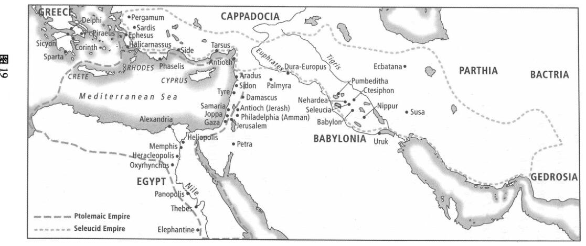
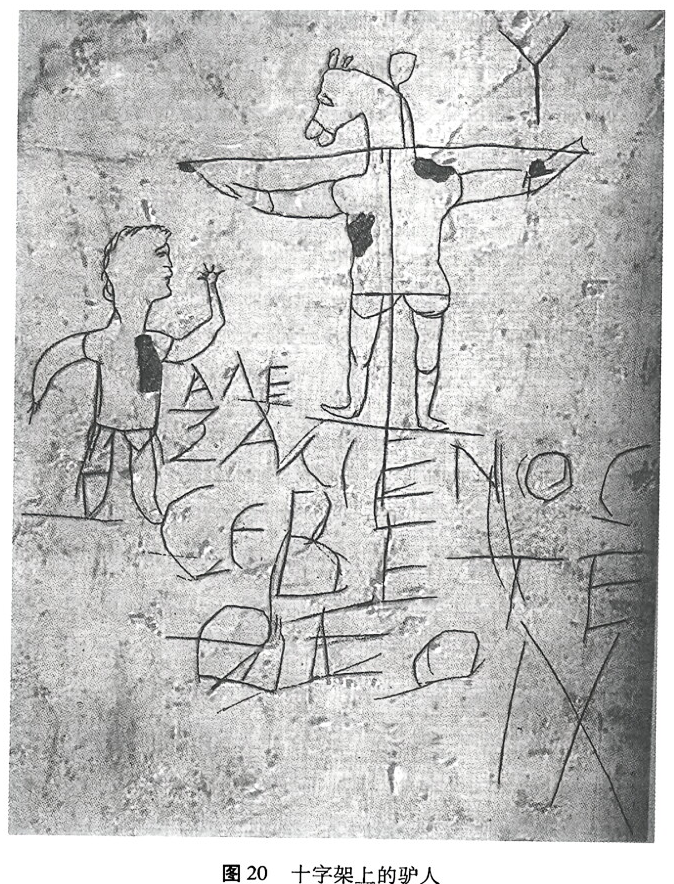

如果看不到耶稣的故事实际上是圣经宏大故事的高潮片段，我们就无法理解耶稣故事的意义。而圣经是上帝在人类历史中所做工作的编年史册，上帝的美好创造刚刚被人类的背叛败坏的时候，他就开始了拯救使命。上帝创造了它，因此它理应属于上帝。上帝为了让它恢复到自己一直希望的那样，就要救赎它，为自己赎买它回来。《旧约》讲的就是为了达到这个目的上帝在以色列人中的举措，讲的就是他起初的救赎和恢复的工作，并他的反复应许，这应许说有一天他将为整个受造界完成他从这个小国里开始的事业。在上帝的打算里，最后那天空和大地都要被更新和恢复。在耶稣基督身上，那更新和恢复是以上帝之国作为它的最终形式被启示出来的。
耶稣在他的一生中向我们展示了拯救是什么样的：上帝医治和更新的大能鲜活地存在于耶稣的所有话语和行动中。借着他的死，耶稣完成了救赎：在十字架上他向罪恶的力量开战并且战胜了它们。借着他的复活，耶稣打开了通向新创造的门——并一直撑开着门邀请我们加入他。福音 (Gospel,来自古英语 godspel,“好故事”) 意思是“好消息,”而这就是最好不过的消息了：在耶稣身上，上帝的国到来了！
这好消息最初是口传的，那是在耶稣从死里复活并且圣灵在五旬节降临到他的追随者身上之后。当那些追随者们 (即早期教会)试图把好消息带给他们的邻居和那些他们在旅行中遇见的人之时，许多关于耶稣的生活、死亡和复活的故事被讲述和传递。不久，许多这样的故事被记录下来并开始被收集成有关耶稣生平的更为完整的叙述。至少有四位作者承担了这一挑战，写下了我们称为《马太福音》、《马可福音》、《路加福音》和《约翰福音》的书。我们称这些书为《福音书》，¹这是因为它们最初的目的是讲述关于耶稣的好消息：在他里面，上帝的新一天终于开始了。
《福音书》不像现代的传记；它们并不试图给出耶稣生命中种种事件的精确的、按时间顺序的记录。而是通过从耶稣言行的见证人所讲的故事里选择一些事件，每位《福音书》作者都给特定的历史情境铺撒下好消息的光芒；每位《福音书》作者都根据他自己在历史中所处时刻的需要来解释那些事件，并排列那些事件的顺序来传达一个特定的主
题，于是各《福音书》也就因作者们的处境和目的不同而不同。圣灵必定在这些人类作者之中运行，从而使他们给出一个关于上帝在耶稣里的工作的可靠叙述和令人信服的见证，但我们也能在他们写的东西里同时看到历史作品的常规程序，以及每位作者自己的独特关注。
由于福音书的编排不是简单按时间顺序的，而是更片段化和专题化的，也由于每本《福音书》在很多方面不同于其他的《福音书》，所以仅仅叙述耶稣的故事是很难的。但这故事的基本结构是清楚的，耶稣早年在拿撒勒(这方面我们了解很少)，之后他开始了一段在加利利的巡回事工，在他自己的言行中揭示了上帝之国的到来。随着更多人听到这个来自拿撒勒的革命性的先知讲道，他的追随者数量增加到空前的庞大，他也越来越多地引起 (主要是敌意的)犹太领袖们的注意。他决定去往耶路撒冷本城，那里既是国家的中心又是对耶稣言行具有最为刻薄反对意见的中心。在耶路撒冷，耶稣被捕，受审问，被钉十字架——尽管他的法官宣布他没有犯任何罪，不久，他从死里复活。耶稣的死亡和复活构成了他事工的高潮，也证明了，尽管所有邪恶的力量都试图毁灭他、挫败他的目标，但耶稣反而将其挫败了：他对罪和死亡的战胜迎来了上帝之国。
第四章余下的部分将讲述这个有关耶稣的故事。人们通常认为《马可福音》是第一本被写出来的《福音书》，因此在讲述这好消息的时候，我们将使用马可的《福音书》的基本结构，同时适当参考其他《福音书》。
耶稣在自己生命里使上帝之国广为人知
犹太人对上帝之国的期待
耶稣的整个使命都围绕着上帝之国这一核心主题。²根据《马可福音》，耶稣在他最初所说的话里宣告了这件事：“日期满了，神的国近了！你们当悔改，信福音！”(《马可福音》1：15)。但接着耶稣更近了一步，他称：不仅上帝之国终于降临到以色列，而且它是在他自己中到来的 (《路加福音》4：18、21)。他，也就是拿撒勒的耶稣，只为了唯
独一个目的而被父差遣，那就是：让上帝之国的好消息广为人知(4：43)。
令人吃惊的是，这个惊人的宣告两千年以后，许多真诚地想追随耶稣的基督徒们却对居于他事工中心位置的“王国”知之甚少。由于我们生活在现代西方民主制度中，整个国度的概念与我们的日常经验并不相容。但如果我们真要理解耶稣为解释他自己的生活目的而所作出的惊人宣告，那么至少我们必须设身处地，当我们是第一批听见这些话的一世纪的犹太人，并且进入他们的体验。只有这样我们才能理解他们想的是什么、感觉到的是什么、当耶稣突然宣布上帝之国的到来之时是什么渴望激发了他们。
耶稣没有停下来，对“上帝之国”这一词语下定义或作解释，那些听他讲话的人很熟悉这种语言。毕竟，在1世纪巴勒斯坦以及散居的犹太人之中有一种广泛的期待，即：上帝即将行动——迅速地，突然地，满有爱、愤怒和大能地——来更新他的受造界并恢复他对整个世界的统治。但在上帝行动之前，人们在期待那一天的同时，应当如何生活?如何能够加快神国的到来?又如何赶走可恨的罗马人?上帝对他子民的要求是什么?
在前一章我们概述了四个众所周知的对这些问题的回答：奋锐党人坚持革命，撒都该人推动与罗马当局的妥协，法利赛人教导严格的文化和宗教隔离，爱赛尼派拥护彻底的退隐。尽管有四种不同的方法——但他们在对外邦人的共同憎恶方面是一样的，他们对所有那些盟约之外的人有着根深蒂固的仇恨或者至少是警惕。就在那个时候耶稣来了，他拒绝走这其中的任何一条路。耶稣的道路惊人地不同：这是爱和苦难的道路：“爱敌人而不是毁灭他们；无条件的饶恕而不是报复；乐意受苦而不是使用武力；祝福和平制造者而不是赞美仇恨和复仇。”³
耶稣为他的王国使命做准备：他的早年、洗礼和受试探
每位《福音书》作者所关注的都是向我们表明这样一件事，即应当将他所讲的关于耶稣生活的许多故事，理解成发生在一个大得多的故事背景中的众多片段。马可从施洗约翰的事工开始讲耶稣的故事，是为了提醒我们《旧约》对那位先行者的预言，而那先行者是要为即将到
来的弥赛亚铺好道路的。《马太福音》回溯得较远，把耶稣的事工植根于从亚伯拉罕开始的以色列故事中：对于马太而言，耶稣进入历史是为了完成以色列的故事。路加甚至回溯到更远——一直到了亚当——来表明那个关于耶稣的好消息对全人类具有重大意义。而约翰将我们带回到创世之前的时代：耶稣是永恒的，是非受造的道，从起初就与上帝同在。
耶稣的诞生是上帝在人类历史中以身体体现。他的出生是奇迹般的：他不是由他 (合法的)人间父亲 (约瑟)所生，而是由圣灵的力量在童贞女马利亚的腹中感孕而生 (《马太福音》1：18-23；《路加福音》1：26-35)。耶稣出生在大卫的家系中，他们甚至出生在同一个地方：伯利恒。被逐的⁴牧羊人听到耶稣降生的宣告：“我报给你们大喜的消息，是关乎万民的。今天救主降生，就是期待已久的弥赛亚，就是主！”(《路加福音》2：10-11 作者的释义)。作为一名犹太人，他八天的时候受割礼，这是进入盟约社群的标志。在他的受割礼的时候，亚拿和西面——他们在希望中等待，是以色列虔诚遗民的一部分——见证了那个孩童就是以赛亚预言的实现，而那预言将拯救应许给犹太人并外邦人(《路加福音》2：29-32、38)。耶稣和他的兄弟姐妹们在拿撒勒长大，是一个木匠的儿子和学徒。从耶稣出生后到他的公开使命开始前这些年间的事情人们所知甚少，只知耶稣意识到他是上帝的儿子并且他的使命已经开始显露。耶稣12岁的时候，他的父母在每年一度的逾越节庆祝之后不小心把他遗忘在了耶路撒冷，后来他们在圣殿里找到了他，当母亲温和地责备他的时候，他回答说：“岂不知我应当在我父的家里吗?”(《路加福音》2:49)。
耶稣公开使命的开始与他表兄施洗约翰有关 (《马可福音》1：1-8)，施洗约翰作为知晓一个来自上帝的讯息的先知出现在巴勒斯坦，那讯息便是：神的国将要到来，神将要行动，正如《旧约》先知们应许的那样，神要回到他的子民中统治他们。他的国将被“要来的那位(Coming One)”开创，那人会带来拯救和审判。上帝的国如此近了，约翰说，以至于分离(虔诚的)麦子和(不虔诚的)糠秕的簸箕已经在弥赛亚手里了 (《路加福音》3：9、17)。约翰自己的任务是 (正如以赛亚应许的那样)为将要到来的王铺好道路，使人民做好准备接他(《以赛亚书》40:3-5; 参见《玛拉基书》3:1;4:5-6)。
约翰的消息是，上帝的臣民们必须悔改——即从罪恶转向上帝，寻找他应许的拯救——并在水中受洗。洗礼在哪里发生是重要的，因为对犹太人来说地理位置里浸透了象征性的意义。约翰在约旦河施洗，那是因为一千多年前，以色列人在这里进入了应许之地，成为上帝照向万民的光。约翰回到这里对于以色列人而言标志着一个新的开始，一个新的来自上帝的召唤，这召唤要他们完成最初的(长期被忽视的)任务。洗礼是这个新开始的生动象征，暗示着清除罪恶。上帝的子民要 (象征性地)再过一次约旦河，进入那地，得着洁净和预备，再次承担起他们的任务。
一天，与到约翰这里来受洗的人群一起，耶稣也来了 (《马可福音》1：9-11)。尽管耶稣 (不像其他人)没有罪需要被清除，但他将自己与这个民族视为一体，将他们的使命担在自己肩上，从而成为将上帝的拯救导向各国的渠道 (《马太福音》3：14-15)。他在水里受洗的时候，圣灵以可见的形式来到他身上，使他能够胜任他的任务。父自己确证耶稣的呼召：“你是我的爱子”(《马可福音》1：11)。父的这些话证实了耶稣是以色列的受膏之王，来到这里开创上帝的国，圣灵则会赋予他完成上帝拯救工作的能力。
在这工作开始之前，圣灵引耶稣进入旷野去遭遇撒旦(《马太福音》4:1-11; 《马可福音》1:12-13)。这是一个关于属灵征战的故事,而不是某一个人寻求个人圣洁的故事。我们在读这个故事的时候，必须记住1世纪的以色列在上帝的国应如何到来这一问题上有几种不同观点，因为这正是关于耶稣受试探这一故事的全部。
撒旦向耶稣展示了他作为弥赛亚可选的三条不同道路，我们可以把它们归结为：(1)大众主义者的道路，(2)术士的道路，(3)暴力革命者的道路。通过走第一条路，把石头变成面包，耶稣可以通过他的大能成为一名大众主义者的弥赛亚。他能给人们他们想要的东西，满足他们对一般食物的迫切的需要，并作为一名大众革命的领袖走在前面；这个民族肯定会要求这样一位供养人做他们的王。在另一种选择中，耶稣
可以成为一名以救世主自居的术士，从圣殿的墙上跳下，迫使上帝以一种惊人的方式发出行动来救他。大众就会完全被弄得眼花缭乱，从此不论耶稣做什么说什么他们都跟随他，因为他们受到神迹带来的纯粹感官感受的驱使。或再者，耶稣可以按照奋锐党人的模式成为一名政治上的弥赛亚，使用暴力和强制手段，沿着军事家的捷径走上王位。但是这样做等于和撒旦达成一致，采用撒旦自己的统治计划，也就等于在撒旦面前低头屈服。
耶稣看到所有这样的道路实际上都是从撒旦开始的，他便拒绝为满足大众对上帝的弥赛亚应该是什么样或者不该是什么样的期待，而扭曲自己的使命。相反，他选择进入神国的艰难道路：那是由谦卑的事奉、无私的爱和牺牲性的受难组成的道路。耶稣的道路是十字架的道路。受到圣灵赋予的大能和引导，具有坚定的弥赛亚呼召感，耶稣已经准备好开始父交给他自己的使命。
耶稣在加利利开始他的上帝之国的使命
耶稣的使命有一个卑微的开始。他巡回于巴勒斯坦北部的加利利省，通常在靠近迦百农城那里。他用话语和行动使上帝之国广为人知，并开始聚集起一批追随者，这些就是神国之社群的核心。耶稣的教导和行动带有如此大的权柄，以至不久一大群人开始聚集起来，在耶稣的旅行中跟随他。但并不是所有耶稣的追随者都喜欢他们所听到的：犹太人领袖里反对耶稣意见的在增长；甚至他自己的追随者中一些人也不再跟随他 (《约翰福音》6:66)。⁵
耶稣宣布神国的到来
施洗约翰强调上帝对罪的审判，强调人们需要悔改，从而为将要到来的国做好准备，而耶稣则宣告了好消息：上帝的国已经到来了 (《马可福音》1:14-15)。在那个文化里,希腊语“好消息” (euangelion,“evangel”好消息一词的各种形式来源于它)一词通常用来指那类带来巨大欢乐的宣告。它可能是一场婚礼的消息、一个儿子的出生、一次军

事的胜利，或者是开启一个新的和平时代的登基大典。⁶耶稣宣告了这好消息，即上帝拯救他的受造界的大能到来了。上帝已经带着爱和大能进入了人类历史，来解放和更新整个世界。⁷这不是那种会被隐没在《时代》(Time) 或者《麦克林斯》(Macleans) 的宗教版面里的宣告,而是登在第一版的重要事情！“上帝现在正通过耶稣在爱和大能中行动，并通过他的灵来恢复整个受造界和全部人类生活，从而使他们再一次生活在上帝自己的仁慈统治下。”上帝再次为王!⁵
在《以赛亚书》(52：7-12)里有一幅画面，这画面对于1世纪巴勒斯坦受困扰的犹太人来说变得如此珍贵，以至于他们立刻辨认出来。先知以赛亚写书 (大约在耶稣时代600年以前)给他的人民，那时以色列人陷于悲惨的流放生活中，作为俘虏囚禁于外邦的巴比伦。以赛亚描绘了将要到来的一天，以色列又将得自由，成千上万的人从受压迫的土地上回到他们挚爱的巴勒斯坦，回到圣城耶路撒冷。所有那些在其他人被驱逐流放的时候自己还留在那城的人，现在踮起脚站着，从耶路撒冷的城墙和塔楼上观望。他们寻找那个信使，那信使将会跑在人群前面来宣布盼望已久的消息，即流放的结束和上帝重新统治的开始。这个信使还在很长一段路以外的时候人们就看见了他，他正跑步穿过众山，就是那些守卫着通向城市的道路的山。不久他们甚至能听到信使的声音了，开始微弱，但逐渐响亮，最后听到他大声在喊那消息：“上帝做王了！他带来拯救与和平。上帝得胜了。他回到锡安来统治全世界！”听到这些，那些在城市的城墙和塔楼上观望的人也提高了他们的声音，向那信使，向彼此，并向那些归来的流放者呼喊；他们快乐地哭泣、欢呼，传递胜利的呐喊：“上帝回到了锡安！主我们的王带来了拯救与和平！”
现在，自巴比伦流放结束以来已有几百年的时间过去了，锁在一本古旧的先知书卷里的话又一次在犹太人耳边响起，因为以赛亚的信使已经到来了。尽管他说的是来自那书卷的熟悉的话，但他并不像一个回忆古老故事的人那样讲话。他的名字叫耶稣，并且他用自己的表达方式，满有权威地大胆宣称：“上帝要回来统治了！”
一些消息仅能作为信息接受，而另一些，比如“楼里起火了”，则要求每个听到的人立即回应——哪怕是慢一拍，那都是荒唐的。如果一
个人真地听到了那个消息，也就是上帝终于要采取行动来开创他的普世王国了，这时候他不可能无动于衷。这个消息要叫众民听到，并要求回应。耶稣号召那些第一批听到他的话的人们要“悔改并相信”，然后他简单地说, “跟随我”(《马可福音》1:15-17)。
或许可以这样解释耶稣对悔改和相信的号召：“抛弃对世界的错误观点，接受在我之中即将到来的上帝之国的现实存在。你可能看不到上帝医治之国突然进入历史的大能，但你可以相信在我之中上帝的解放的大能就在眼前。放弃你旧的生活方式，相信我，获取一种新的生活方式。”然后耶稣叫那些悔改并相信的人“跟随”他。类似的，在耶稣的时代，一名信徒会放弃他自己生活中的计划而跟随一名拉比(rabbi)，与他一起生活，学习律法，仿效拉比的所有生活方式。通过选用这些语言，耶稣向他的犹太听众发出了他们所熟悉的邀请，这邀请即是：“来。跟随我。学习我。放弃你自己的生活方式。做我所做的。学会像我一样生活。”然而，尽管这些话对于1世纪的犹太听道者而言非常熟悉，但另一方面它们却是陌生的。”这是因为耶稣远远不止是一名拉比：他是主和基督。那些选择听耶稣讲道并跟随耶稣的人，他们的生活并不以律法为中心，而是以耶稣为中心。他的门徒要全心全意地对他忠诚。很少有形象比喻能更生动地表达耶稣所要求的完全的献身和绝对的忠诚，那就是：对上帝的国的忠诚表现在对耶稣的忠诚里。
西门和安得烈，接着还有雅各和约翰，首先回应了耶稣对他们生活的惊人呼召。有了这几个人，一个国的社群便初具雏形了 (《马可福音》1:16-20)。
耶稣通过他全能的工作揭示了神的国
耶稣自称为上帝之国的弥赛亚，这一宣称不久被一些惊人的行动所证实，那些行动揭示了在他里面作工的上帝的拯救大能。人们见证了医治的奇迹、鬼魔被驱赶的奇迹、自然力量顺服于耶稣意志的奇迹、死亡自动解除并交还生命的奇迹 (《马可福音》1：21-34、40-45)。尽管耶稣那个时代的人对行异能者和驱魔者并不陌生，但纯粹是耶稣所作所为的广泛和大能，就宣告了某种新颖的事物、一种新的力量突然闯入了历
史。当施洗约翰的信徒们来到耶稣跟前询问他是否真的是弥赛亚的时候，耶稣回应了一个温和的答案。他指着他所做的说：“你们去，把所看见的所听见的事告诉约翰，就是瞎子看见，瘸子行走，长大麻风的洁净，聋子听见，死人复活，穷人有福音传给他们”(《路加福音》7：22)。这是证明上帝之国的医治力量已经来到地上的明显的证据，它也证实了耶稣自己作为上帝的受膏之王的角色。因此，当法利赛人后来控告耶稣借撒旦之力做这些事情时，耶稣给出了严厉的谴责：“我若靠着神的能力赶鬼，这就是神的国临到你们了”(《路加福音》11：20)。《马可福音》上记载的第一个神迹就是赶出污鬼 (《马可福音》1：21-28)，这就并不足为奇了，因为耶稣到来是为要除灭魔鬼的作为 (《约翰一书》3：8)。
所有耶稣的“异能”(《马可福音》6：2、5)实际乃是上帝的解放大能通过他作工的明显证据。当耶稣医治瞎子 (《路加福音》18：35-43)、瘸子 (《马可福音》2:1-12)、耳聋舌结的人 (7:31-36) 和麻风病人 (皮肤失调；《路加福音》17：11-19)的时候，人们看见了上帝医治和更新的大能涌入人类历史，以结束疾病和痛苦的统治。耶稣平静风浪 (《马可福音》4:35-41)、给饥饿的人吃饱 (8:1-10) 并为疲劳的渔人准备了一次异乎寻常的捕鱼 (《路加福音》5：1-11)的时候，他证明了上帝更新和恢复被诅咒的受造界的大能。耶稣使拉撒路 (《约翰福音》11章)、寡妇之子 (《路加福音》7:11-17)和睚鲁之女 (《马可福音》5：21-43)复活的时候，人们看见了上帝的大能战胜死亡。耶稣不仅展示了上帝从魔鬼、苦难和死亡的蹂躏之下解救人类的大能；还揭示出上帝为医治整个受造界而工作的现实。这些奇迹如同窗户，透过这些窗户我们可以一瞥更新的世界，透过这些窗户撒旦和他的魔鬼同伙们被抛弃在外。疾病和痛苦不再会有，死亡本身永远消失，受造界恢复到它最初的美好与和谐，没有一丝一毫的罪或罪的后果将毁损或亵渎上帝的新创造。
耶稣的大能源于圣灵和祷告
耶稣医治人们、驱赶鬼魔，在疲惫的一天过去后，次日早晨，他早早地找到一处旷野的地方，在那里祷告 (《马可福音》1：35)。路加告
诉我们耶稣“常”隐居祈祷，有时他祷告一整夜 (《路加福音》5：16；6：12)。¹⁰这些关于祷告的叙述使我们能把握耶稣事工的核心和他大能的奥秘，那就是：他同上帝极为密切的关系——那是儿子和自己父亲的关系，同时还有圣灵在耶稣里面并通过耶稣所做的工作。
耶稣通过与上帝密切交流来完成自己的使命，称呼他为阿爸，即“父亲”(《马可福音》14:36;《约翰福音》17:1-3)。阿爸是亚兰文词汇，属家庭用语，用来表达存在于亲近的家庭成员之间那种特别亲密的关系。以色列人以许多头衔来认识上帝，“父亲”只是其中之一；并且对犹太人来说，用这种亲密的词汇来称呼上帝是最不同寻常的。他们深切的敬畏之心通常并不允许自己对主如此亲近，他是天地的创造者、天上万象的主、以色列神圣的王。所以，特别引人注目的是，在耶稣与上帝沟通之时，这种最亲密的语言成了主要的称呼用语，就像敬爱的父亲和所爱的儿子之间所用的语言一样。
父用自己圣灵大能的工作来回应自己的至亲爱子。实际上，圣灵作工回应祷告，国就随之而来。在耶稣的使命里，祷告是“一种方法，借着它人们就臣服于圣灵的大能和影响”。¹¹圣灵自耶稣生命之始就在他之内并通过他工作。耶稣由童贞女马利亚因圣灵感孕而生。在耶稣的受洗仪式上，圣灵倾洒在他身上，他不久在拿撒勒的犹太会堂宣告圣灵在他身上，赋予他大能以完成他的使命(《路加福音》4：18-19)。耶稣借着圣灵的大能履行他的使命 (《使徒行传》10：38)。法利赛人怀疑在耶稣里面做工的力量或许是属魔鬼的，耶稣对质道：“我若靠着神的灵赶鬼，这就是神的国临到你们了”(《马太福音》12：28)。上帝的灵作工的地方就是上帝的国降临的地方，詹姆斯·邓恩 (JamesDunn)的著名评论说：“与其说耶稣在哪里国就临到哪里，不如说圣灵在哪里国就临到哪里。”¹²耶稣通过祷告同父保持密切的交流，这就使圣灵医治和更新的大能得以自由施展。
耶稣引发对他的神国之使命的反对
耶稣回到迦百农之时，聚在那里听他讲道的众人之中有几位犹太人领袖，法利赛人和律法教师，他们来自和耶路撒冷差不多远的地方，为
的是审查这新“王国”运动的正统性 (《马可福音》2：1-12；《路加福音》5：17-26)。这些人对他们的所见所闻感到强烈不安。在一系列章节里，马可叙述了耶稣和这些心存怀疑的领袖们在各样犹太人的传统习惯中的冲突愈演愈烈。每次遭遇冲突，耶稣都挑战现状，具体体现在宣扬对上帝之国的崭新看法，这彻底不同于犹太文化和宗教居统治地位的守卫者们的看法，耶稣所讲述的故事他们从未听过。
耶稣的故事以一种法利赛人无法忍受的方式解释了上帝之国的来临，他们在期盼一个王国，在这个王国里以色列将会突然被强行从外邦的罗马人控制下拯救出来。他们是隔离主义者，自封为犹太民族本质的守卫者，相信犹太民族的本质正遭到破坏，受到周边异教文化同化犹太人文化的威胁。对于饮食律法、什一税、守安息日和选择“合意的”进餐伙伴，法利赛人都特别留意，因为这些是他们保持自我纯洁之策略的一部分。他们立下严格的界线以区分纯犹太人和受鄙夷的异教徒或罗马人，这界线甚至用来区分纯正、正统的犹太人和其他因文化和宗教上的妥协而变质的犹太人，就是那些达不到法利赛人的区分标准的犹太人。耶稣大胆挑战了法利赛人有关守安息日和食物条例的僵硬标准，故意与那些受法利赛人排挤的人一起吃喝。但我们需要理解的很重要的一点是，耶稣的挑战行为并非仅仅是抗拒犹太文化的标志，他真正抗拒的是这些事物已经开始在他那个时代所代表的东西，即隔离、仇恨和复仇的渴望。这些事物与上帝呼召以色列人爱他们的邻居、做连接上帝的祝福和万民之间的渠道、成为世界之光格格不入。并反对法利赛人对以色列本色和天职的极端误解，耶稣高举以色列的传道呼召。他拒绝遵守法利赛人的律令，拒绝按他们的方法看待事物，这激怒了那些宗教领袖们，因为耶稣所讲述有关以色列人从来就应该是什么样的故事证明那些宗教领袖们的故事是谎言。
在一系列叙述中，马可突出了这一冲突，也突出了耶稣的使命遭到的反对，这一反对力量滋长于犹太领袖们之中和那些听从他们的人(《马可福音》2:1至3:6;参见《路加福音》5:17至6:11)。耶稣赦免了瘫子的罪，又医治了那个瘫子来证实自己的权柄(《马可福音》2：1-12)。如此激怒法利赛人的不只是耶稣给予那人的赦免，而是他这么做是“在
官方机构之外，向所有不当之人，靠自己的权柄”。¹³按他们看事物的观点，耶路撒冷圣殿是唯一由上帝指定的、人们可以寻求赦免的地方。然而耶稣靠自己的权柄行动，将这神国之礼物献出，因此绕开了圣殿。莱特说，就像是有人凭着自己的权柄颁发驾驶执照。¹⁴自然，由于(按法利赛人的观点)耶稣的赦免之礼挑战了上帝自己的赦免，这就引发他们控告耶稣有僭妄罪。
耶稣和所有“不当”之人常在一起，这也冒犯了法利赛人。他们质问耶稣：“你为何同税吏并‘罪人’一同吃喝?”(《马可福音》2：16)。自马加比时代以来 (那时异教使许多犹太人极大妥协)，法利赛人就已经鼓动所有那些热心于上帝统治以色列的人要更新自己的圣洁，在家中施行为圣殿而指定的食品方面的洁净律法。因此，所有涉及食品的——不仅是人们吃的食物，还有如何准备食物，吃之前如何洗净自己，在你的餐桌上谁是受欢迎的——所有这些对法利赛人而言都是个人圣洁的标志。它们成了条规仪式，目的是在“圣洁”的犹太人和“不圣洁”的外人 (不管是犹太人还是外邦人；参见《马可福音》7：2-4)之间保持距离。耶稣挑战这些隔离主义者的传统，因为他恰恰与那些受他们鄙夷的人相处，欢迎那些分离主义者认为不洁的人，而使法利赛人感到反感。
禁食也成为耶稣和法利赛人之间的争论话题 (《马可福音》2：18-22)，因为法利赛人依照条规仪式戒绝在某段时间内食用某种食品，但耶稣的追随者并不这样做。对法利赛人而言，禁食象征着以色列人的现状：上帝的子民仍在流放之中，在上帝的审判下，等待上帝的弥赛亚到来，从压迫中解放他们，带来上帝的国。¹⁵耶稣做了简单的解释：他和他的信徒不禁食是因为神国已经到来了。倘若新郎不在，在宴会上禁食是应该的，但新郎在场之时，禁食就是不对的。
最后两次冲突是关于安息日的，而安息日在法利赛人对神国之到来的理解中是一个核心标志 (《马可福音》2：23 至3：6)。¹⁶对他们而言，守安息日是遵守上帝律法的重要部分。安息日帮助区分以色列人和异教徒邻居，使以色列人为上帝的归来做好准备。法利赛人紧盯着耶稣，想看看这个宣称神国已到来的人是否至少会肯定他们的安息日律法。但
是，耶稣的回答又让他们失望了，耶稣挑战了他们对安息日的隔离主义式的理解。
在大众当中，耶稣 (至少在一段时间内)是大受欢迎的。他的言行吸引了加利利人的注意，很快一大群人追随他 (《马可福音》1：33；2：12；3：7)。不过一般来说，他们对耶稣的使命的认识是肤浅的。当耶稣的目的变得更为明显以后，这一大众支持就开始消退了(《约翰福音》6:60-69)。
耶稣集合起一个社群
耶稣在加利利作工的早期之时就开始在身边聚集起一个社群 (《马可福音》1:16-20;2:13-14)。写给犹太人的《马太福音》, 特别突出了这一事实，即耶稣早期力图在以色列之内形成一个社群。¹⁷一个 (外邦)迦南妇女来求耶稣解救她被鬼附身的女儿，耶稣首先告诉她，“我奉差遣，不过是到以色列家迷失的羊那里去”(《马太福音》15：24)。在那个女人执著和机智的质问之后，他确实把鬼驱赶出去(15：25-28)。他对早期聚集在一起分担他的使命的信徒说：“外邦人的路，你们不要走；撒玛利亚人的城，你们不要进；宁可往以色列家迷失的羊那里去”(10：5-6)。开始耶稣的意思不好理解，特别是对那些碰巧是外邦人的读者，但如果以1世纪以色列先知的盼望为背景来理解他这里的话，意思就清楚多了。
以色列人被拣选在上帝的统治下作为一个民族而生存，但他们没有实践他们的呼召，上帝就在审判中打散了他们。先知应许说以色列有朝一日会复原，它被打散的人民会再一次在上帝的统治下聚在一起。以西结在这个民族受上帝审判被流放的时候对以色列人讲话，应许在末日上帝将重新聚集起他的子民并给他们新生(《以西结书》37章；39：23-29)。上帝将指定他的仆人大卫作为牧羊人，由他来聚集曾在上帝的审判中被打散于万民之中的以色列人这羊群 (36：23-24)。因此，耶稣说他被差遣到迷失的羔羊以色列人中的时候，这就是他在心中所想的，即：以色列人的末日聚集开始了。¹⁸那聚集 (和许多人认为的相反)并不是把流散的犹太人聚到巴勒斯坦。人们并不聚集到那地，而是将要聚
集到耶稣自己身边。同他一起，人们将通过圣灵分享神国的生活。
根据先知们所言，这末日的拯救尽管开始于被拣选的人民，但是并不局限于以色列人。在先知文学里，以色列人首先被更新，届时 (外邦的)万民将聚到它那里，分享它的拯救。一旦以色列人聚在那地，以西结说：“万民……就知道我是耶和华他们的神……”(39：27-28；参见37：28)。以赛亚用两个难忘的比喻来描述同一事件。在第一个比喻里，所有民族来到以色列来分享盛宴 (《以赛亚书》25：6-9；55：1、2)。在第二个比喻里，以色列人成为迷失者的灯塔，世界所有民族被吸引到它那里。但这灯塔的光只有在以色列人真正成为上帝子民的时候才会照射出来 (2：2-5；60：2-3)，对以赛亚而言，以色列人长期受外邦霸权摆布的悲惨生活，其目的就在于此。被拣选的人民被流放，原因是他们没有实现他们的呼召，也就是没有成为“外邦人的光”(42：6；49：6)。
现在耶稣所宣布的正是这样一天的出现，这是以色列人更新的开始，它最终会将万民吸引到上帝面前。这先知的盼望就暗含在耶稣对自己新聚集起的信徒所说的话背后，他说：“你们是世上的光。城造在山上，是不能隐藏的。人点灯，不放在斗底下，是放在灯台上，就照亮一家的人。你们的光也当这样照在人前，叫他们看见你们的好行为，便将荣耀归给你们在天上的父”(《马太福音》5：14-16)。¹⁹听耶稣说这番话的、新聚集起来的、神国的信徒社群，便是复原的以色列的开始。以赛亚的预言正在实现：以色列正被更新！
当耶稣宣告神国的好消息，要求个人通过悔改和信仰来回应这好消息时，这个社群便开始形成 (《马可福音》1：14-15)。有些人听了耶稣的道以后，耶稣要求他们忠于他，同时仍然留在他们的家乡或村庄里，在那里活出上帝之国的生活。这样追随耶稣的人，“因为他们接受的是耶稣的实践和耶稣的做以色列人的方式……因此他们在当地社群里是与众不同的”。²⁰耶稣要求另外一些人放下一切，全部时间地随他旅行。从后面这个团体里，耶稣指定了12人同他一起生活，并指定他们为使徒(来自希腊文意为“被差遣的人”；《马可福音》3：13-19；《路加福音》6：12-16)。这12人的数字代表了以色列的十二个支派，日后成为更新了的民族之核心 (《路加福音》22:30; 《启示录》21:12-14)。因此,
耶稣对他们的挑选是“一个象征性的先知行为”，借此他描绘了以色列12 支派在末日来时聚集在一起，共享神国拯救。²¹
指定十二门徒具有双重目的：(1)好叫“他们和耶稣同在”，(2)以便“差他们去传道，并给他们权柄赶鬼”(《马可福音》3：14)。与耶稣“同在”的意思就是关注他，了解他的生活方式，倾听他，领受他关于神国生活的教导，就是学习耶稣和父如何亲密交流，把耶稣借助圣灵的生活作为自己生活的榜样。他们听见耶稣用语言宣布好消息，用行动展示好消息。他们看见他的生活充满爱 (《约翰福音》15：9-13)、顺服 (17:4)、喜乐 (15:11)、和平 (14:27)、公义 (《路加福音》4:18)、怜悯 (《马太福音》9：36)、柔和与谦卑 (11：29)，并对穷人深切的怜悯 (《马可福音》2：15-17)。因此，他们将学着使这些东西成为自己生活方式的一部分。《福音书》里有大量篇幅的经文讲的是耶稣教导他的信徒，什么是在他所带来的国度里过公民生活的含义?登山宝训是最清楚的例子，使我们了解耶稣对信徒关于上帝之国里的生活的教导 (《马太福音》5-7章；参见《路加福音》6：17-49)。12使徒也被要求跟随耶稣来用自己的行动参与到耶稣的使命中来，耶稣不久便差遣他们去从事与他自己所担负相同的神国使命 (《马可福音》6：7-13；《路加福音》9：1-9)。对信徒社群而言，以积极的行动实践耶稣的使命才是与耶稣交流的真义。
耶稣欢迎罪人和被遗弃的人
耶稣在他的神国社群里容纳了穷人、病人和失丧之人——也就是所有那些在以色列被边缘化的人。²²但他并不完全忽视法利赛人和宗教领袖 (他们如果选择要来，是受欢迎的)，尽管那些人常把他描述为“税吏和‘罪人’的朋友”(《马太福音》11:19;参见《路加福音》7:36;14：1-24)。耶稣把自己比作医生 (医治病人而不医治健康人的医生)，他解释了为什么他的事工基本面向罪人而不是“义人”，那是因为他来就是“为了寻找、拯救失丧的人”(《路加福音》19：10；参见《马可福音》2：17；《路加福音》15节)。在大筵席的比喻里，主人打发仆人带来了贫穷的、残废的、瞎眼的、瘸腿的 (《路加福音》14：21)。因此那
些被犹太人社会拒斥的人得到了来自耶稣的热忱欢迎，耶稣欢迎他们到上帝的国里来。
尽管耶稣使命的这一方面在《马可福音》里是清楚的，但路加给予它特别的强调。路加向我们展示了四种特定的团体，它们是耶稣关心的特殊对象: (1)“罪人”,(2) 税吏, (3) 娼妓, (4) 穷人和病人。²³在路加这里，“罪人”的意思是：“做受鄙夷的工作的人，或者有不道德的生活方式的人，诸如通奸者、娼妓、杀人犯、强盗、骗子一类。”24当“罪人”这个词出自法利赛人之口的时候，它也会因派系斗争产生新的意思，可以指那些不遵守法利赛人规定的人。耶稣对税吏的欢迎是同样令人不快的，许多税吏欺骗人民，对人民索价过高，所以犹太社会排斥税吏。但即使税吏们不欺骗也不勒索，他们所有人也被认为是背叛他们自己人民的人，因为他们帮可恨的罗马人收税。耶稣也欢迎娼妓和品格有问题的女人，他允许这样的一个女人用香膏涂膏于他的脚上(《路加福音》7：37-50)，并饶恕另一个行淫时被拿的女人 (《约翰福音》8：1-11)，这使法利赛人感到震惊。耶稣对犹太人的领袖们说：“我实在告诉你们，税吏和娼妓倒比你们先进神的国。”(《马太福音》21：31)耶稣很可能欢迎过娼妓同桌吃饭。²⁵
耶稣也欢迎穷人、乞丐、病人和肢体有残疾的人。在犹太人当时的思想里，贫穷和疾病经常被解释为上帝对一个人的罪进行审判的标志。耶稣却愤怒地谴责了这种传统“智慧”。有一次他的信徒问起关于一个瞎子的事情：“拉比，这人生来是瞎眼的，是谁犯了罪，是这人呢?还是他父母呢?”耶稣回答说：“也不是这人犯了罪，也不是他父母犯了罪。”耶稣告诉他的信徒不要把瞎子的苦难视作是上帝对某种不端行为的惩罚，而应视作一种机会，上帝的工作得以“在他身上显出”(《约翰福音》9:1-3; 参见《路加福音》13:1-5)。
他的教导使这一点很清楚，即那些处于犹太社会边缘的人在上帝的国里是受欢迎的。他通过两类行动最有力地解释了这一点。作为神国之来临的标志，耶稣同这些“被遗弃的人”同桌吃饭；同时，他还医治他们。“耶稣在实践一种根本上是无所不包的桌边团契，以此作为一个核心策略，宣告并重新定义突然到来的上帝之统治。”²⁶在耶稣的时代用
餐并不是随意的事情，它们是“高度复杂的事情，社会价值、界线、地位和等级都在里面得到加强”。²⁷如果热忱欢迎别人进入自己的社会团体，那么一起用餐是明显的标志。法利赛人认为许多类“罪人”、病人和穷人应该被排除在社群的团契之外，因为他们处在受上帝审判的位置(参见《约翰福音》9：2)。照此来说耶稣的实践就是对法利赛人的极大冒犯。通过和这些人一起吃饭，耶稣做出了关于神国的积极的声明：罪人、税吏、娼妓、穷人和病人，他们尽管对某些人而言是宗教的被遗弃者，但都被允许参加弥赛亚的神国之筵。耶稣欢迎他们，每天与他们同桌用餐，以此来象征这一欢迎。
耶稣的医治奇迹也向人们示范了他如何允许那些生活在犹太社会边缘的人进入上帝之国。有一份书写的残片来自大约耶稣那个时代的一个爱赛尼派社区，它展示了这些严格的犹太人是如何拒斥许多人进入神的国的：“不论瞎眼的还是瘸腿的、聋的还是哑的、患麻风病的还是肉体被玷污的，他们都不得参加社群的会议。”²⁸法利赛人颇像爱赛尼派，相信唯独他们自己才是上帝的真正的以色列民，他们排斥的人也与爱赛尼派相似。而耶稣却抚摸瞎眼的、耳聋的、患麻风病的和瘸腿的人，他不只医治他们的身体、把他们从压迫里解放出来，还恢复他们在神国里的完全身份。²⁹
耶稣用比喻解释神的国
耶稣宣布了上帝之国的到来，他用自己的行动来证明这一点，又聚集了国之社群。然而，这国却一点也不像犹太人所期待的那样。耶稣本人也不像《旧约》预言里面众所周知的弥赛亚。这个加利利来的先知的言行似乎并没有给这个世界本身带来多大改变。犹太人的期待似乎注定又要变成失望，对于任何一个一世纪时期的、认真对待耶稣宣告的以色列人而言，笼罩心头的是困惑和迷茫。
我们不妨一瞥施洗约翰在希律的监狱里时产生的这种困惑。约翰讲道说上帝的国近了，末日审判就要来了。斧子已在弥赛亚手中，约翰说，弥赛亚就要砍下凡不结好果子的树(《路加福音》3：9)。约翰完全期待这个先知的消息得到实现。他明确地认定耶稣就是上帝差遣来开始
这一切的人 (《约翰福音》1：29-34)。之后耶稣宣布神国的到来——可明显没有什么大事发生。约翰期待弥赛亚打倒地上邪恶的统治者，释放本是义人的囚犯 (《以赛亚书》40：23；61：1)。然而当希律王维系着他不义的统治和不道德的生活方式之时，约翰自己却在监狱里日渐憔悴。异教徒罗马士兵大批出没于耶路撒冷的街道；崇拜偶像的罗马帝国安然无事地统治着世界；压迫、不公和不义主宰着世界。先知们难道没有应许过上帝之国将带着公义、和平和上帝的知识到来吗?约翰怀疑是不是自己误解了一切。他招来自己的信徒，差他们到耶稣那里问：“那将要来的是你吗?还是我们等候别人呢?”(《路加福音》7：19)。耶稣的回答指出了他行的奇迹，指出了他为穷人带来的好消息，而这消息标志着上帝救赎的大能已经来临。之后他差约翰的信徒带回去应许说：“凡不因我跌倒的，就有福了”(《路加福音》7：23)。约翰无疑坚持了自己所信仰的，即耶稣就是弥赛亚。但约翰或许仍困惑于神的国，困惑于自己在对神国之到来的宣告中扮演的角色，直到撒罗米³⁰为了母亲的缘故砍30下约翰的头颅 (《马太福音》14:1-12;《马可福音》6:16-29)。
耶稣在寓言里讲的正是这种困惑。他的信徒们努力想理解先知们的应许如何在耶稣身上实现，而事情当然不是他们所预期的那样。通读《福音书》可以清楚地发现，那些信徒们就是“弄不明白这事”。耶稣的比喻解释了神国的“奥秘”，而那国已经以这样一种完全出乎意料的方式在他们之中显现 (《马太福音》13：11)。寓言能帮助那些凭着信心接受耶稣话语的人理解在耶稣身上显现出来的神国之本质，同时，寓言却在那些拒绝相信的人面前将真道遮盖起来 (13：12-17；参见《以赛亚书》6:9-10;《使徒行传》28:26-27)。
《马可福音》4章和《马太福音》13 章提供了这些寓言故事的重要精选。马可用这样的语言介绍它们：“上帝的国就像……”，而马太这样介绍：“天国就像……”(意思是一样的；马太在写给犹太人的书里不直接用耶和华这个名字，而是用上帝统治的地方的名称来间接指代上帝)。在这一系列寓言里，我们可以了解到神国的奥秘。
1.神的国不是一次性完全地到来的。尽管犹太人期待神的国即刻完全地到来，或者至少在弥赛亚出现后很快到来，但这并没有发生。有
时耶稣谈论这国，他讲说它的语气好像这国已经来临了；另一些时候他却暗示这国会在将来到来。他的许多比喻有助于解释这表面上看起来的矛盾。播种人和稗子的比喻教导人们在当下神的国会通过福音的“播种”而到来，而在未来稗子会与麦子分别开来 (《马太福音》13：24-30，36-43)。那些关于芥菜种和面酵的比喻则暗示尽管国在当下还小，看起来微不足道，但在未来它将成为荣耀的和无法忽视的 (13：31-33；《马可福音》4：30-32)。撒网的比喻教导我们在当下所有种类的鱼都被聚集到神的国里，但在未来将会有一次大分隔 (《马太福音》13：47-50)。
因此，耶稣描述的上帝之国既在当下也在未来；已经在这里开始，但还没有完全在这里。这并不矛盾，耶稣没有弄错。那么，上帝之国这样重要的事情怎么可能有两种明显相反的性质呢?它是如何在“已经”和“尚未”两者的张力中成立的?
在那些比喻里耶稣给他极其困惑的追随者们提供了解决这个国的“已经-尚未”这一矛盾的办法。犹太人期待随着神国的到来，当下的邪恶时代会快速结束。而那稗子的比喻告诉我们，新的医治大能已经随耶稣来到世界，而魔鬼的力量会继续与之并行。即将到来的时代与旧的时代相重叠；两种力量都在当下存在。
2.在当下，神的国并不以一种不可抗拒的力量到来。犹太人期待着当上帝之国到来的时候没有任何敌人能够阻挡它，他们记得尼布甲尼撒的梦里一块非人手 (代表上帝之国)凿出来的石头打在大像 (代表巴比伦、美狄亚、波斯、希腊和在后来的解释中为罗马的这些世界上的帝国)上，把它砸得粉碎 (《但以理书》2章)。但以理说：“天上的神必另立一国，永不败坏……要打碎灭绝那一切的国，这国必存到永远”(2：44)。上帝肯定会把敌人都清除掉，有谁能对抗上帝的大能呢?
但耶稣说：“你们听啊！有一个撒种的出去撒种”(《马可福音》4：3)。这撒种的比喻里出现了多么不同的一幅画面 (4：1-20；《马太福音》13：1-23)。弥赛亚并不作为一个军事征服者而来，而是作为谦卑的农人而来。神的国并不是以不可抗拒的权柄和武力到来，而是借着神国的消息而来。种子落到路旁、落到土浅石头地、落到荆棘里——结不出果
实。换句话说，听者可以拒绝神国的呼召，还很可能看起来安然无事。天上当然不会飞下巨石来消灭反对耶稣的人。神国隐藏在一个卑微的形式下，以表面的软弱行于世间。耶稣在他的事工中通过自己的话语宣布神国的消息——福音，并以自己的行动证明它，在自己的生活中体现它。福音是一粒被赐予的种子，在愿意接受的和相信的人心田里结出神国的果实。后来保罗把福音称作“神的大能”(《罗马书》1：16)，然而那大能并不以武力踏平或根除所有反对力量，稗子的比喻向我们描绘了这一情景 (《马太福音》13:24-30,36-43)。耶稣说:“天国好像人撒好种在田里，及至人睡觉的时候，有仇敌来，将稗子撒在麦子里。”麦子和稗子出现在一起，仆人想要根除稗子的时候，农人却禁止这样做，解释说等到收割时他会把好的作物从稗子里分出来。有些人接受了这话语，上帝的大能就带来了神国之果实，但其他人拒绝那消息——并且似乎也不受什么罪。
3.神国的最后审判留给未来。耶稣的听众期待上帝的审判快速降临到不虔诚的人身上。先知们讲到有一天上帝会带着他的国来到世上，发烈怒审判他的敌人 (《以赛亚书》63：1-6)。救赎和烈怒为同一个现实的两面：上帝拯救他的受造界是通过审判那毁掉它的敌人 (61∶2；63∶4)。但那稗子的比喻 (《马太福音》13：24-30，36-43)向犹太人显示他们期待的审判并不会立即降临。田里的工人想立即根除稗子 (13：28)，但主人嘱咐他的仆人让麦子和稗子一起生长。在世代的末了审判会真地降临；但在那之前神国的大能和魔鬼的力量必然一起延续。
许多其他的比喻相似地解释着延迟的审判：好的鱼将被从坏鱼中分出来 (13:47-50),绵羊从山羊中分出来 (25:31-46)。主人把钱托管给他的仆人，主人将会回来算账 (25：14-30)。五童女为她们的灯预备油等待新郎的到来 (25：1-13)。两个人机智地用他们主人的钱投资，因此受到夸奖；另一个人仅仅把钱埋下，被责备为“又恶又懒的仆人”并被丢在外面黑暗里 (25：14-30)。耶稣的真正追随者是那些生活上效仿他的人：他们给饥饿的人吃的，给衣不蔽体的人穿的，给口渴的人喝的，探访囚犯。这些忠诚的追随者会被邀请到父的国里，但另一群人，他们的生活和耶稣自己的生活毫无共同之处，他们最后会被送到永久的
惩罚中去。(25：31-46)。耶稣在他的比喻里讲起神国最终到来的时候，他强调当下的准备和忠诚；人要回应神国的好消息，活出以耶稣为中心的生活，直到最后一天。
4.为在当前的时代许多人能进入神国，神国的完全启示被延迟。既然神国的到来已经从耶稣身上开始，那么为什么上帝不完成他的工作呢?为什么他延迟了末日审判?为什么要隐藏他的国的荣耀和大能呢?当我们找到这些问题的答案时，我们就能够开始认识到在圣经故事里我们自己的位置和呼召，即在耶稣建立神国的那一天和神国的最后启示之间这段时期里我们的位置和呼召。路加的一个比喻提供了这样一个答案(《路加福音》14：15-24)。一个筵席正在准备好：桌子摆好了，上面放置了食品和饮品，但主人暂停下来，客人们必须还要等候一会儿，筵席的喜庆被暂停——但主人对于延迟有很好的理由，那就是为了失丧之人也能够进来坐在筵席桌旁分享饮食。所有人——特别是贫穷之人、失丧之人、被遗忘之人——都被邀请、被欢迎来到筵席中，这筵席就是上帝的国。“这天国的福音要传遍天下，对万民作见证，然后末期才来到”(《马太福音》24：14)。法利赛人喃喃抱怨耶稣欢迎所有不当之人的时候，耶稣给他们讲了三则寓言：失羊的比喻 (《路加福音》15：3-7)，失钱的比喻 (15:8-10) 和浪子的比喻 (15:11-32)。浪子 (他离开家乡和家人流浪了一段时间)悔悟并回来，那父亲就欢喜快乐地欢迎他。
耶稣讲了许多比喻——至少有40个，我们仅看了一些例子。但是在这为数不多的例子里，耶稣教导的主题已经彰显出来了：那些比喻启示我们神的国真正的样子，完全不同于耶稣的听众的错误理解。
耶稣在加利利之外的旅途
耶稣神国使命的第一部分 (许多神迹和他用寓言的教导)发生在迦百农周边的加利利地区。现在，大约两年以后，对他使命的误解和对他持续增长的敌意使得他迁移到更远的地方去。耶稣越来越多地把注意力放在教导自己的门徒上面。在后来的加利利之外的旅途中，发生了两件关键性事件：彼得承认耶稣是弥赛亚，以及耶稣把他的神圣荣耀通过变像的启示给了最亲近的信徒。
耶稣逗留于外邦人的领土
耶稣的神国使命在加利利默默无闻地开始了，但不久他的大能和权柄吸引了大批追随者。由于他的“神国”的运动不符合犹太领袖们的期望，所以他们反对耶稣。希律也把耶稣当成威胁。耶稣在人群中面临两个问题：有些人沉浸在误导的热情里，想把耶稣推举到政治上的救世主的位置，而另一些 (这些人数越来越多)大失所望，加入到反对耶稣的队伍中去了。反对和误解的结合使得耶稣前往加利利北部的外邦人地区，在那里继续他的使命。但耶稣越来越多地把注意力转向了教导他最亲近的门徒，给予他们教训和指导以继续他的工作。
马可开始叙述耶稣离开加利利的故事的时候穿插了一个片段，讲耶稣同法利赛人讨论了“洁净的”和“不洁的”食品的问题。特别是自以色列人流放巴比伦结束以来，这些区分构成饮食条例的一部分，这些条例对法利赛人极其宝贵，它们是判断是不是虔诚的犹太人的方法。对于法利赛人而言，隔离就是一切，但耶稣故意反对他们的隔离主义革命计划。法利赛人甚至认为外邦人占据的土地是被污染的，他们教导说，犹太人要做义人，就必须在经过外邦人的领土以后作洁净自己的礼仪(《约翰福音》11：55；参见《路加福音》9：5)。但耶稣却藐视在摩西律法的外围衍生出来的口头传统，并要把这些纯洁律法恢复到它们的真正背景和意义中去。这样，《马可福音》里对什么是“洁净的”和“不洁的”这个讨论就为耶稣去往“不洁的”外邦人土地的故事做好了铺垫。在外邦人的土地上，耶稣将驱除污鬼，医治那些瞎眼、聋、哑的人，给四千人吃饱 (《马可福音》7:24至9:27)。
耶稣是谁?
耶稣已经执行他的神国使命有一段时间了，人们关于他有各种各样的看法。关键的问题是：“耶稣是谁?”在几个故事里路加清楚地显示了这个问题。耶稣平息风暴以后，信徒们怀着敬畏和惊奇互相询问：“这是谁?他吩咐风和水，连风和水也听从他了”(《路加福音》8：25)。当希律，也就是那个处死约翰的人，听说了耶稣的医治事工引起的骚动
时，他问：“这是什么人……我竟听见他这样的事呢?”(9：9)。耶稣在凯撒利亚腓立比暂停他的旅行时，问自己的信徒这同样的问题：“人们说我是谁?”他们回答：“有人说是施洗的约翰，有人说是以利亚，又有人说是先知里的一位。”耶稣使这个问题更为个人化：“你们说我是谁?”彼得代表大家说：“你是基督”(《马可福音》8：27-29)。这，即耶稣的身份，是问题的核心。彼得的承认是我们必须认识到的、《福音书》中的转折点。
希腊词语 christos——“基督”,是希伯来语 messiah——“受膏者”的翻译。³¹在《旧约》时代，某些人被抹膏，从而就任某些特殊官职，例如祭司 (亚伦)或王 (大卫)或先知 (以利沙)。抹膏意味着此人是拣选的或上帝安排来完成指定任务的。在新旧约之间的时期， “弥赛亚”或“基督”这个词被预言性地用作某些人的头衔，那些人是上帝指定来恢复他的统治，开创他的国的。这头衔常常带有政治上的或军事上的含义。耶稣接受了彼得的承认：实际上，耶稣就是弥赛亚。但大众对“受膏者”的理解，以及对上帝要他做什么的理解还很不够。因此，耶稣警告门徒不要告诉任何人他是谁 (《马可福音》8：30)。人们的期待必须要调整以适应耶稣的现实。所以，尽管多数犹太人期待基督将是上帝的使者，由他来开创上帝的国，但他们对于耶稣不得不忍受被钉十字架的羞辱没有任何概念(参见8：31)。他们期望的是大卫王室后裔中一位的到来 (参见12：35-37)。但耶稣的身份比这大得多：他是超凡和荣耀的主，上帝的儿子。所以耶稣打破了期待的模式。他是上帝拣选的，被指定来开创上帝的国——但他也是受钉刑的牺牲者，神圣的子。
但是，彼得和那些门徒们却不明白这点，他们的误解在后面的几节经文里显露出来。耶稣清楚地告诉他们自己不久要被钉十字架的时候，彼得开始同他辩论，说他一定弄错了——基督不可能这样可耻地死去(8：32)。耶稣让彼得闭嘴，又严厉斥责他，因为他和其他门徒仍没有领悟真道，不能理解十字架的必要性：耶稣必须死 (8：33)。很久之后门徒们才开始认识到彼得所承认的事情之全部意义。只有在经历了耶稣的复活荣耀以后，他们才会明白对于耶稣而言做基督意味着什么。
马可叙述了彼得的承认，“你是基督”，马太在此之上添加了重要
的短语：“永生神的儿子”(《马太福音》16：16)。³²这些话背后还有着浓厚的《旧约》传统。³³所有以色列人，特别是以色列的国王们 (作为这民族在上帝面前的代表)被指定为上帝的儿子 (《出埃及记》4：22-23)。这头衔暗示与上帝的特殊关系以及遵从上帝而去完成的特殊任务。耶稣时代的犹太人在寻找一位弥赛亚，那弥赛亚应该是真正的“上帝的儿子”，就像《旧约》里的王一样 (《撒母耳记下》7：14；《诗篇》2章)，³⁴耶稣到来了，作为与上帝有如此一个特殊关系、有着这样神圣任务的人，来开创上帝的统治。然而，尽管这些很重要，但耶稣的身份还远不止这些，他同上帝的亲密关系和他的救世的任务是独一无二、无人可比的。从某种意义上讲，他的“上帝之子”的身份实际上从来没有也绝不可能用于任何除他之外的人。他是等候已久的《旧约》预言里的那个人。因此，尽管耶稣真的处于“上帝的子孙”这长长的历史里，但他从另一种角度来说绝对是独一无二的，是上帝的“独生子”(《约翰福音》3:16)。
《马可福音》后面的经文又提供了一个头衔，这头衔加强了彼得的承认。耶稣开始教导他的信徒说“人子”必须受难、死去、复活。但谁是人子?³⁵那头衔来自《但以理书》(7：13-14)，这段经文在耶稣的时代很受欢迎，因为它给以色列人应许了在长长的一段压迫历史之后辉煌的未来。在但以理的异象中，四只野兽 (代表四大成功的世界异教帝国)从海中上来。但在这异教统治之间，“王位被安排好”，上帝，即“亘古常在者”，坐上王位，四只野兽被杀。一个“像人子”的人走向那亘古常在者，被带到他的面前。这“人子”被给予权柄、荣耀和大能，万民就敬拜他；他的权柄和国度一直延续到永远。在耶稣的时代，许多犹太人把《但以理书》中“像人子的一个人”的形象看作是一个先知异象，预言以色列的弥赛亚，那弥赛亚满有荣耀、权柄和大能，战胜异教王国，分享上帝的宝座，统治永恒的王国，以此为以色列报仇。耶稣宣称自己就是这“人子”。³⁶
耶稣的身份在一次事件中被确证，事件发生在彼得承认的一周以后。耶稣带着彼得、雅各和约翰到一处高山 (可能是凯撒利亚腓立比正东北部的黑门山 Mount Hermon)。在那里当其他人正观看的时候，耶稣
的外貌就改变了 (《马可福音》9:2-8;《路加福音》9:28-36)。他的面孔和衣着呈现出非凡的光彩：他的面孔如太阳般闪耀，他的衣着璀璨炫目。有一片刻时间，门徒们看到了人子的，即上帝之子的，那显露出来的荣耀和庄严 (参见《彼得后书》1：16-18)。摩西和以利亚 (《旧约》人物，在犹太人中享有重大权威，代表律法和先知)显现并站在耶稣身旁。上帝以一朵云的形式亲自显现，对战栗的门徒们说：“这是我的爱子，你们要听他”(《马可福音》9：7)。信徒们再看的时候，就只有耶稣站在那里了。但是，想象不出来比这更好的、对他身份的确证了。在他荣耀的变像中，在上帝对自己儿子的地位 (甚至高于摩西和以利亚)的确证中，耶稣作为上帝拣选之人被启示给众门徒(《路加福音》9：35)。门徒们尽管被人们日益增长的敌意所动摇，特别是关于耶稣被钉十字架的奇怪言论，但对于他们，前面的道路是明确的：听从耶稣。
耶稣前往耶路撒冷
耶稣在外邦人领土的简短探访在彼得的承认和耶稣的变像中达到高潮。彼得和其他门徒们仍旧没有完全理解耶稣一定要走向十字架这一点。尽管如此，耶稣还是和他们一起出发，前往耶路撒冷，为了上帝之国和黑暗势力的最终遭遇，这黑暗势力就是那隐藏在犹太人对神国的对抗背后的。³⁷当耶稣继续教导他的门徒时，两个主题突显出来：(1)受难的必要性；(2)做门徒的代价。
十字架之路
耶稣向着耶路撒冷开始他最后的旅行，他教导门徒们他必受难，并要被拒绝、背叛、杀死 (《路加福音》9：22、44)，但门徒们仍不理解(9：45)。他解释说他必须经历另一次“洗礼”，在它完成之前将经受痛苦 (12：49)。对希律要杀死他的威胁，耶稣回答说：“你们去告诉那个狐狸说，‘今天、明天我赶鬼治病。第三天我的事就成全了……因为先知在耶路撒冷之外丧命是不能的！’”(13：32-33)。在这次旅行中耶稣讨论了上帝之国的到来，与他即刻面对的事情联系起来：“他必须先受许多苦，又被这世代弃绝……他将要被交给外邦人。他们要戏弄他，凌辱
他，吐唾沫在他脸上，并要鞭打他，杀害他。第三日，他要复活。”(17：25；18：31-33)。门徒们还是不理解。耶稣语言虽通俗但意思是隐藏的，门徒们不晓得他所说的是什么 (18：34)。
耶路撒冷将成为上帝之国和邪恶势力的最后决战之地。在以色列的许多人确实期待上帝虔诚的犹太人军队与反对上帝意志的异教外邦人之间有一场高潮军事战斗，但这并不是耶稣正在为之准备的战斗。相反，他要自己承担宇宙间魔鬼的全部力量，以此来耗尽它的能力。对耶稣而言，在这场战斗里他的胜利不是因为杀死对手，而是因为他允许自己被杀死、在十字架上放弃自己的生命。
在十字架的路上做门徒
门徒们仍不理解耶稣爱与受难的使命，像许多他们的同代人一样，他们仍旧想要看见上帝激烈的审判降临到那些拒绝他的王权的人。即使是现在，也就是和耶稣在一起这么久之后，他们仍然不理解。时光短暂，在门徒的强化训练方面有“紧迫的需要”。³⁸门徒们必须真正懂得跟随耶稣的含义，这样他们才能在耶稣被带离他们以后继续耶稣所开启的事业。
关于门徒身份的教导与耶稣最后旅行的主题紧密相关：他把门徒身份描述为一条需要沿着它行进的“道路”，是一次旅行。门徒们的确是实实在在地走在通向耶路撒冷的路上，但同时他们正在接受有关门徒身份之路的教导。³⁹不过，这每一条“路”的终点都是为了爱的受难和弃绝。
关于那次旅行的叙述不时地被打断，提醒在耶路撒冷等候耶稣的是什么?因此那旅行本身有一种受难的黑暗色调。这么说就很难将门徒身份的要求或耶稣要经受的敌意独立于他们当时在通向死亡的旅途中的位置赋予它们的含义去理解，这旅行于是有了教育的层面，因为它促使耶稣的追随者们接纳遭受拒绝和神圣使命之间的纽带关系。⁴⁰
这最后的旅行本身教导了门徒们：跟随耶稣就意味着走十字架的路。
耶稣严厉训斥了犹豫的和半心半意的追随者。做主门徒之路是有代价的：它要求对耶稣、对上帝之国完全的信奉、完全的献身和忠诚(《路加福音》9：57-62)。“若有人要跟从我，就当舍己，天天背起他的十字架来跟从我”(9：23；参见14：27)。决定跟随就要承担意义重大的后果：“凡要救自己生命的，必丧掉生命；凡为我丧掉生命的，必救了生命”(9:24)。⁴¹
做主门徒的训练在去往耶路撒冷的路上继续着。追随耶稣意味着参与他的使命 (《路加福音》10：1-24)。门徒们被比喻成农场工人，被差去帮耶稣收割庄稼。他们的使命，像耶稣自己的一样，就是以他们的话语和行动与黑暗力量交战：“要医治那病人……对他们说，‘神的国临近你们了’”(10：8)。他的门徒们也必须用他们的全部来爱上帝，爱邻舍如同自己 (10：25-37)。在以色列境内，对妥协的犹太人、撒玛利亚人和外邦人有广泛的憎恶，在这个背景下，耶稣讲了一个从耶路撒冷下耶利哥的 (犹太)人的故事，那人被殴打、抢劫、丢在路上等死。犹太人的领袖们——在故事中以一个祭司和一个利未人为代表——没有在那人的急难中帮助他，但是可恨的撒玛利亚人却动了慈心，照顾他。那“为义的”的犹太人因此发现了“不虔诚的”撒玛利亚人是他的邻居，是上帝要他去爱的人。耶稣讲这个故事是为了回答一位律法师的问题，“在将要到来的时代我必须做什么才能有自己的一份?”答案便是：“跟随耶稣来寻找一种新的同时也是彻底变革性的遵守摩西律法的方式，造物主上帝爱他与以色列的盟约，并且发现那些被拣选民族边界之外的人乃是邻舍。”42
耶稣在耶路撒冷总结他的国之使命
最终耶稣到达了耶路撒冷，在那里他最后的日子里，他忙于应对犹太领袖日益增长的敌意，忙于关于审判的教导。在这里，耶稣施行了三次惊人的行动，以此来象征性地描绘将要到来的神国的本质，就像《旧约》里的先知们那样，那些先知以非凡的象征性行动来戏剧性地传递上
帝的信息。耶利米打碎瓦器 (《耶利米书》19：1-15)，以显示上帝会打碎以色列民族；以赛亚赤身行走在耶路撒冷(《以赛亚书》20：1-4)，以此来说明即将到来的亚述对埃及和古实的羞辱。相似地，耶稣的最后行动也是预言性的，它描绘了即将到来的事。但是，他的行动含义更多，因为他不止是一位先知：他还以弥赛亚的身份行动。
耶稣骑驴进入耶路撒冷
用嘹亮的号角庆祝一位王进入一座城是那时众所周知的传统。⁴³耶稣骑驴进入耶路撒冷这事比其他任何话语都更响亮地说道：“上帝回到耶路撒冷，做王统治以色列人和万民，耶稣登上大卫的王座。”这个事件可以在所有的《福音书》里找到 (《马太福音》21：1-11；《马可福音》11:1-11;《路加福音》19:28-40;《约翰福音》12:12-19), 人们总根据《撒迦利亚书》9：1-13 来解释这件事，这些章节有助于我们理解这事件的含义，《撒迦利亚书》描绘以色列人的王在军事胜利后回到耶路撒冷。我们已经看到，犹大马加比骑入耶路撒冷(大约在耶稣那个时代之前一个半世纪，紧接着他对抗塞琉基军队的胜利)，受到欢乐的呼喊赞扬。一到达那里，耶稣在耶路撒冷的第一个行动就是把圣殿因希腊国王安提阿古四世伊必芬尼而遭受到的玷污清除掉。然而，以色列人期待的世界级王国并没有随着犹大马加比而形成，所以犹太人就在等候另一个王来建立应许给大卫和先知们的世界帝国，那个王会追随犹大马加比的脚步，真正地实现撒迦利亚的预言。并且其他的“王”的确已经来过，效仿犹大的作法，登上以色列的王座，但这些人中没有一个把上帝的国带来。
针对这个背景环境，耶稣对拥有大卫王权的宣称就再清楚不过了。他上演了这同样的骑进耶路撒冷的一幕，作为以赛亚而到来，登上以色列的王座，要把犹大马加比没能带来的国带来。耶路撒冷的人群理解这个行动的意义，他们用呼喊、欢迎和赞扬 (出自《诗篇》118章)来迎接耶稣的到来：“奉耶和华名来的是应当称颂的。”“那将要来的我祖大卫之国是应当称颂的!”(《马可福音》11:9;《路加福音》19:38)。然而人群和门徒们 (《约翰福音》12：16)都没有理解耶稣是哪一种王。
马太的写作针对那期待一位军事上的弥赛亚的犹太人，他在叙述里强调耶稣是作为柔和谦卑的王而到来。他引用撒迦利亚的话：“看哪，你的王来到你这里，是温柔的，又骑着驴”(《马太福音》21：5)。因为耶稣在和平中来，所以为他的进入选择的动物是一种卑微的载重动物，而不是一种适合军事征服的皇家战马。耶路撒冷的人“不认识……上帝的到来”(《路加福音》19：44)，因为他们误解了耶稣王权的本质，那是“谦卑和侍奉的而不是政治征服的王权”。⁴⁴几天之内，那同一人群会要求把耶稣钉在十字架上。
耶稣施行对圣殿的审判
耶稣在耶路撒冷的第二个弥赛亚式行动中，施行了对圣殿的审判(《马可福音》11：12-17)。⁴⁵由于在古代近东的宗教和政治之间总存有一种紧密的联系，所以得胜的王进入之后常常伴随着某种在圣殿里的行动。⁴⁶在《福音书》的故事里，耶路撒冷圣殿是犹太教独一的最重要的象征，是上帝在他的子民中居住的地方，在那里，献祭制度叫不忠诚的以色列人得以弥补因犯罪而对盟约关系的违背。除此之外，圣殿承载了宗教的、政治的、经济的和社会的意义；最重要的是，它处于犹太人对即将到来的神国的希望之核心位置。就像犹大马加比曾经清除过圣殿一样，以色列人相信上帝有一天会回到这里来建立他的王权，他要从这里统治他的世界王国 (《玛拉基书》3：1)。上帝回到他的圣殿的时候，将带着严厉的审判到来 (3：3、5)。根据犹太人的期待，这审判将指向异教外邦人，指向那些犹太人里面同异教徒实践相妥协的人。上帝将“摧毁那些不义的统治者”，并且“把那些践踏毁坏耶路撒冷的外邦人从耶路撒冷清除出去……用铁棍打碎所有他们的东西；用他口中的话语消灭所有行不义的国家”( 《所罗门诗篇》17:21、24)。⁴⁷
耶路撒冷的人群等待着耶稣来实现他们的期待，但耶稣在哭泣，因为以色列人误解了上帝的到来，这到来实际上意味着审判——并不是对外邦人的审判，而是对不结果实的以色列人的审判 (《路加福音》19：41-44)。耶稣在他的事工中始终警告说对不忠于上帝的民族，上帝要施行审判；现在耶稣在耶路撒冷的这段时间，他的教导日益强调这个主题
(《马太福音》21:28至25:46;《马可福音》12-13章)。⁴⁸当耶稣带着对圣殿的审判到来的时候，他象征性地实施了所有他警告过的事情。
圣殿行动由耶稣对不结果实的无花果树的诅咒 (《马可福音》11：12-14、20-21)为参照，这是一次弥赛亚式的和预言性的行动，象征着对一个不结果实的民族的审判。就在那个民族的象征性中心的地方，耶稣驱赶了那些售卖献祭动物的人，推翻了兑换银钱之人的桌子。耶稣暂停了圣殿的运作，这可能预示圣殿的最终灭亡。
耶稣的话语解释了他的行动：圣殿是要做万国祷告的殿 (《马可福音》11：17)，圣殿供万民来承认以色列人的上帝的权威 (《以赛亚书》56：7-8)。上帝拣选了以色列人居住在万民中间，这样万民都可以进入与上帝的盟约中。但是，耶稣所进入的这个殿现在却行使着完全不同的职能，它支持隔离主义者的事业，把以色列人和他们的邻人割裂开。此外，这圣殿鼓励的是一种暴力和毁灭的精神：它已经成为“作乱者的窝”(《马可福音》11：17；作者的翻译)。⁴⁹以色列民族把它的选民身份变成了隔离主义者的特权，他们没有遵守它成为世界之光的呼召。所以对这圣殿的审判一定要发生，这样一个新“圣殿”，也就是耶稣在上帝更新的子民中复活的生命(参见《约翰福音》2：21)，就可以成为上帝想要的万民之光了。
当我们在这个背景下看耶稣清洁圣殿的时候，那些犹太领袖为什么开始想法杀死耶稣的原因就清楚了。耶稣不止是在挑战他们宝贵的期待和热望，宣布他们最珍视的象征的毁灭，而且耶稣竟然还以主、他们的上帝之名做这些事！耶稣就如同自己是上帝特选的弥赛亚一样在行动，尽管法利赛人、撒都该人和其他争夺以色列领导权的人在其他事上完全对立，但他们都认为耶稣因他对上帝之国到来的宣告威胁到了他们的全部生活方式。所以，这个人必须离去！
耶稣将自己的死象征化
耶稣进入耶路撒冷并清洁了圣殿之后，把那一周剩下的时间大部分花在了同犹太领袖激烈的辩论上。由于逾越节在那一周，耶稣就聚集起他的门徒们一起吃逾越节筵席，庆祝逾越节。(《马太福音》26：17-30；
《马可福音》14:12-26;《路加福音》22:7-23)。耶稣在耶路撒冷所实施的三个象征性行动里，逾越节晚筵是最后的也是最重要的一个：在这筵席里他将自己的神国使命的高潮事件戏剧化地表现出来。⁵¹51逾越节之夜，耶稣吩咐他的门徒去准备逾越节筵席。⁵²这种仪式性52的筵席是作为一种庆祝活动开始的，它庆祝的是以色列人在摩西时代被从埃及救赎出来 (《出埃及记》12章)。然而对于一世纪犹太人而言，它也象征着即将到来的“新的出埃及”，借着它上帝的国会到来。回顾着上帝对埃及人曾经的胜利，一世纪的犹太人上演这筵席，就是希望不久之后上帝就会在他们自己的时代做类似的事情。上帝那时已经把自己的子民从埃及的束缚中解救出来了：上帝现在肯定会把他们从罗马压迫者的手中解救出来。上帝将要到来的国、一个新的盟约、罪的赦免、他们从流放中返回——所有这些词语都表达了以色列人对上帝在他们民族历史中的高潮时刻将做之事的盼望。《福音书》里介绍的这个逾越节筵席就盼望着那一时刻，但是，耶稣用了这筵席并赋予了它新的意义。在耶稣的行动和话语里他说他们渴望已久的国正在突然出现在他们身边，耶稣自己的死就将成为以色列故事的高潮时刻：“那筵席以耶稣使用饼和酒的行动为中心，既讲述了逾越节故事，也讲述了耶稣自己的故事，并把这两个故事交织成了一个故事。”53
在逾越节的传统里，一家之主会解释出埃及的事件和这些事件对当下的意义。耶稣于是用简单而惊人的话语来解释饼和酒的新意义。他拿起饼来，说，“这是我的身体”(《马可福音》14：22)。耶稣快要死了，那死将意味着他的子民的生。就像逾越节之饼永远让人想起以色列从埃及被救赎一样，耶稣的死也将成为以色列人最终被救赎的方法。那杯也显现出新的含义：“这是我立约的血”(14：24)。在他的死中，耶稣将带来新的盟约，带来对罪的赦免，还有以色列人渴望的上帝的国。过去摩西将血撒在以色列百姓身上，用这些话来确认西奈之约：“这是立约的血”(《出埃及记》24：8)。摩西以后一千年，撒迦利亚预言借一场弥赛亚式的胜利上帝会把以色列人从流放中解救出来，更新他同这个民族所立之约：“锡安哪，我因与你立约的血，将你中间被掳而囚的人，从无水的坑中释放出来”(《撒迦利亚书》9：11)。借助“立约的血”流放
将会结束，上帝的国将会到来。耶稣把这“立约的血”等同于他自己的血，这血不久就会流在十字架上。上帝的国要通过耶稣的死才会到来。
耶稣被捕和审讯
自从在加利利耶稣早期的事工引起敌人的注意，他们就一直在谋划除灭他 (《马可福音》3：6)。耶稣在圣殿里蛮横的行为使他们的敌意达到了顶点，于是他们碰面商议逮捕耶稣并杀害他的计划 (14：2)。耶稣的一个门徒，加略人犹大意想不到地出现了 (这让他们非常高兴)，提出要帮助他们：他将告诉他们耶稣在某个时刻的地点，那时他们就能悄悄地逮捕耶稣，不用害怕大众。公会(Sanhedrin，位于耶路撒冷的犹太人执政会议)于是派出一大群人执行逮捕 (14:10-11、43)。54
同时，逾越节晚餐之后，耶稣和他的门徒们去了一个叫客西马尼的地方。耶稣已经知道为了神国的最后一战快要来了，也知道这对于他个人而言意味着什么，于是耶稣向父祷告：“求你将这杯撤去；然而，不要从我的意思，只要从你的意思”(14：36)。祷告完成后，他把困顿的门徒们叫醒，来面对一群愤怒的 (犹大带领的)犹太领袖，还有一群圣殿差役和罗马士兵(见《约翰福音》18：3)。犹大用一个吻问候了耶稣，这样就在黑暗中确认了他。耶稣的一位追随者快速拔出刀——他们仍旧不理解耶稣的国将要在和平而不是暴力中到来(《马可福音》14：47)。耶稣被逮捕了，除了一人外，其他人都离开了他，各自逃命去了(14：50-52)。但是彼得与押犯人的士兵们保持一段距离尾随他们，要去看看会发生什么事。
天已经很晚了。众犹太领袖对犯人作了简短的审问，从亚那(前任大祭司)开始，他问了一些问题，试图让耶稣说出有罪的事情。亚那失败了，他就派人把耶稣送到该亚法(在任的大祭司)那里，该亚法允许一群犹太领袖审问犯人。一群假见证者来到该亚法面前，指控耶稣的种种罪行，但他们的陈述各不相合 (参见《申命记》17：6；19：15)。大祭司被激怒了，他亲自作最后的询问，“你是那当称颂者的儿子基督不是?”耶稣说：“我是”(《马可福音》14：61-62)。法庭迅速认可这是
僭妄，应受死罪 (14：63-64)。这午夜的审问被旁观者嘲讽的议论所点缀着，不时地，差役们被鼓动去打他们的犯人 (14：65；《路加福音》22：63-65)。天将破晓，公会召开正式会议，僭妄的指控被确认 (《路加福音》22：66-71)。在那审问的过程中，彼得三次被问到他和耶稣的关系，但他三次都不认耶稣。
由于犹太人没有权力处死任何人 (《约翰福音》18：31)，耶稣就被带到彼拉多 (罗马人委派的行政长官)那里定刑。犹太公会的那些人很清楚按照罗马法律僭妄并不是杀头的罪，所以他们就控告耶稣叛国和煽动叛乱，宣称他通过反对向凯撒纳税、称自己是王，来颠覆以色列(《路加福音》23：2)。彼拉多被最后一条指控激起了好奇，就问耶稣：“你是犹太人的王吗?”(《路加福音》23：3)。彼拉多和耶稣在一起的时间，他自始至终都犹豫不决：犹太领袖对耶稣的“指控”是不能让人信服的，但彼拉多自己作为巴勒斯坦的统治者，他的地位已经很脆弱了。出于政治原因，他不能承受激怒犹太人会产生的结果。尽管他找不到定这个人死刑的法律基础，但他明白犹太人不能忍受耶稣被释放。彼拉多试图逃避这个问题，首先是通过把耶稣送到希律那里去，然后是通过为犹太人提供一名犹太犯人的大赦。他说他要么释放耶稣，要么释放另一个监禁等候死刑的人，一个叫巴拉巴的作乱者。但众人却大喊，“钉他十字架！”这使得彼拉多同他们说理的尝试受挫。彼拉多接着吩咐属下鞭打耶稣作为他的刑罚，希望这会让犹太人满足，他就可以释放耶稣。于是，罗马士兵嘲讽并残酷鞭打耶稣，用拳头和鞭子不停地打，但不起作用，犹太人反复喊着：“钉他十字架！钉他十字架！”最终，彼拉多不情愿地同意了。耶稣被判死刑，被带走去钉在一个罗马十字架上，悬在那里直到他死。
耶稣在他的死中获得了上帝之国的胜利
在这残酷的事件里我们看见上帝最强大的行动。圣经讲述了上帝在人类历史中恢复他的受造界的伟大作为。《诗篇》作者们一次又一次呼召上帝的子民为这些事而赞美上帝：“全地都当向神欢呼！歌颂他名的
荣耀，用赞美的言语将他的荣耀发明。当对神说，‘你的作为何等可畏！’”(《诗篇》66：1-2)但当我们跟随上帝在历史中工作的故事，到达耶稣基督的死亡和复活这部分的时候，我们就会看见上帝全部救赎工作里面最令人惊叹的部分。上帝在十字架上给人类的罪和背叛以致命的打击，完成了对他的世界的拯救。但是，钉十字架似乎不像是上帝的一次胜利，特别是当我们在一世纪罗马文化的背景下看这件事的时候，这尤其不像是一次胜利。
耶稣死在十字架上
罗马人常强迫被定罪的犯人搬自己十字架上沉重的横木到自己要受刑的地方。但耶稣的不眠之夜，那些无情的嘲讽，尤其是那些残忍的眷打已经给他很大的折磨。他背负着横木的重量跌跌撞撞地走着，古利奈人西门被从人群中拖出来，并且被强迫搬横木。那令人恐怖的游行一直继续到各各他，所谓的“髑髅地”，在那里有人要给耶稣止痛药(拿没药调和的酒)，但耶稣拒绝了。上午九点，耶稣被剥光衣服钉在十字架上，手腕和脚被钉穿，两侧各有一人(两名作乱者，他们也被带到这里处死)被钉十字架。士兵把钉子钉进耶稣的肉里，耶稣说：“父啊，赦免他们！因为他们所做的，他们不晓得”(《路加福音》23：34)。
他的衣服被士兵们分了，他们还在一片木头上写了个嘲讽式的控告，固定在耶稣头部上方：“这是耶稣，犹太人的王。”对于罗马人而言，自称“王”是叛国，是对凯撒的统治权的挑战；对于犹太人而言，这是僭妄；对于透过复活来回顾这钉刑的人而言，这“控告”很具有讽刺意味地正说中了明摆着的事实！
追捕耶稣并合谋将他处死的犹太人领袖们此刻正嘲笑和侮辱他：“他救了别人，不能救自己。以色列的王基督，现在可以从十字架上下来，叫我们看见，就信了！”(《马可福音》15：31-32改述)。犯人中的一个 (在耶稣旁边)在自己的十字架上也参与了这嘲笑，但另一侧那个罪犯责备他：“我们是应该的，因为我们所受的与我们所做的相称，但这个人没有做过一件不好的事。”他接着转向耶稣说：“你的国降临的时候，求你记念我！”(《路加福音》23：40-42)。耶稣认可了他的信
仰：实际上，这个人将会承受上帝的国。
在午正和之后的三个小时，黑暗笼罩了整片大地。耶稣在极度痛苦中大声喊着说：“我的神！我的神！为什么离开我?”(《马可福音》15：34)那耶稣总是称“父”的，这时却已经置他于不顾，因为这一刻耶稣承受了整个世界的罪。耶稣因此不再称他为“父”而仅仅是“我的神”。接着耶稣的生命在一声大喊中停止了：“父啊！我将我的灵魂交在你手里”(《路加福音》23：46)。耶稣最终成就了上帝的旨意，他的工作完成了；他可以再次使自己受到慈爱的父的关照了。
一个罗马百夫长站在旁边以确保这些钉刑完成，不受犹太人群的干扰。他看见耶稣垂死的样子，又听见他的话语，这个刚强的职业军人，在被占领的巴勒斯坦地区军队里掌管一百人队伍的长官，顿时大喊：“这人真是神的儿子！”(《马可福音》15：39)。同一时刻，在背后的城市里，奇怪的事情发生了，就是在离各各他很远的地方，在耶路撒冷圣殿本身的深处。在那里，圣殿的幔子从上到下裂为两半，但不是借人之手。那幔子是用来把万圣之圣的上帝同外室分割开，遮住上帝显现的地方，不让众人看见 (《马可福音》15：38)。耶稣的死为通往上帝的显现开辟了道路 (参见《希伯来书》4：16)。
罗马帝国的钉刑
“他们带耶稣到了各各他……于是将他钉在十字架上”(《马可福音》15：22-24)。对我们这些生活在两千年之后的人来说，要理解在一世纪的旁观者眼中，钉刑这个概念有多么恐怖和可憎是困难的：“一种完全令人不适的事情，在这词原本的含义里是‘令人憎恶的’。”55那些享受着罗马公民特权的人按法律是不可处以钉刑的。在罗马人的审判中，这种折磨和死亡的方法只留给奴隶和外国人，留给最恶的犯人。那种肉体上的痛苦很可怕，并且被尽可能地延长了——持续若干小时，甚至几天。⁵⁶在这个过程中受刑者完全丧失了人格尊严，⁵⁷他们赤身露体被悬挂在公众视线之前，经受过路人的嘲笑和讥讽。特别对于罗马公民而言，同时也对于屈从于罗马帝国的民族而言，十字架是羞辱和痛苦的有力象征。
然而早期教会却大胆地指出说对他们的领袖处以钉刑这事件其实是上帝的伟大行动。这是多么十足的愚蠢 !58不奇怪教会被它的对手嘲笑。一幅来自早期罗马帝国的、刻在墙上的画(墙画 graffito)画的是一个驴头人身的东西被钉在十字架上，一个人在敬拜它。下面潦草地写着嘲讽的题目：“亚历萨美诺 (Alexamenos)敬拜神。”显然，某个奴隶或孩子用这幅早期的卡通画在拿另一个人寻开心。多么愚蠢，多么荒谬，敬拜一个被钉十字架的神！宣称耶稣的死是上帝的伟大行动，这看起来，在1 世纪罗马世界的每个角落里也一定是愚蠢透顶。
这种观点不只罗马人有，受钉刑而死所带来的纯粹的恐惧和人格尊严的丧失也使得犹太人不可能将此接受为启示上帝之手的事件。《旧约》的预言里难道没有说过弥赛亚会带着荣耀和胜利到来吗?他一定是个了不起的强大统治者，把正义施于一个新的世界帝国，他的国要从地球的一端延伸到另一端。如《犹太百科全书》(Jewish Encyclopedia) 所说：“犹太人所认识的弥赛亚没有能承受这种死亡的；因为‘凡挂在木头上都是被诅咒的’”(《申命记》21：23；在《加拉太书》3：13 中被引用)。此外，十字架是所有那些反叛罗马帝国的人——包括许多假先知——结束生命的地方。对于犹太人，“被钉的弥赛亚”是种矛盾修辞，作为上帝强大行动的十字架曾经是 (并且依然是)令他们跌倒的障碍(《哥林多前书》1:23)。
《新约》里的钉刑
《新约》将钉刑从正面地解释为上帝最伟大的行动，这在古代文学里是独一无二的。保罗宣称“十字架的道理，在那灭亡的人为愚拙；在我们得救的人却为神的大能”(《哥林多前书》1：18)。但他和其他《新约》作者们完全意识到他们对这件事的观点会招来嘲笑。对于罗马人，十字架是十足的愚蠢：十字架仅仅是罗马人按惯例给罗马帝国的敌人的最重的惩罚而已。这些人被羞辱、挫败、折磨，超出人类的忍受范围，他们的软弱被暴露——然后死去。在此之外，十字架乃残酷行为之中的一种。
但是早期教会做出了大胆而离奇的宣称，说十字架是上帝在全部人

类历史中的核心行动！这一大胆行为是一个完全不同的视角产生的结果，因为教会是透过复活来看十字架的。
是耶稣从死中的复活证实了他的宣称——他是上帝的受膏弥赛亚，
当我们开始透过复活来看十字架的时候，起初显现出的愚蠢的确是上帝的智慧。看上去的软弱的确是上帝的大能，平定人类叛乱和魔鬼罪恶的上帝之大能。看上去是羞辱的，其实是上帝之荣耀的显露。上帝无私的爱、仁慈、信实、恩典、公义和正直在这事件里被启示出来，他乃是借着这事件来完成对自己的受造界的拯救。在这个世界看来是耶稣的失败，早期教会却宣称为他卓越的胜利，他战胜了所有那些与上帝美好创造作对的敌人。这表面上是毫无意义的暴力和残忍行为实际上启示了上帝最完全的目的，即他对罪的审判，并他更新受造界的大能和意志。从一方面来看，十字架是愚蠢、软弱、羞辱、挫败、荒谬的标志，从另一方面看，那些了解耶稣又从死中复活的人认为，十字架上全是上帝的智慧、大能、荣耀、得胜和意图。
借着十字架，耶稣成就他对整个历史的目的——拯救受造界。我们往往把十字架的意义仅归结为“耶稣为我而死”这个事实。信徒们的确分享他的死带来的成就，也因此我们可以带着喜乐和自信说这话。然而上帝的目的远不止对个人的拯救，在耶稣的死中，上帝以行动实现了对整个受造界的拯救：耶稣为世界而死。
在《福音书》作者选择的叙事方法里，还有在书信中使用来解释十字架的比喻里，都清楚地体现了十字架是上帝用来实现拯救的手段的这一想法。⁶⁹所有四位《福音书》作者都给了它巨大的空间，将它作为耶稣事工的顶峰 (《马太福音》20:28;《马可福音》10:45;《路加福音》24:25-27;《约翰福音》12:23-28)。然而每个人都按自己的方式讲故事，每个人都有适合自己听众的重点。⁶⁰马可把十字架表现为一种手段，耶稣借着它把救赎提供给一个新的、门徒们愿意做出牺牲地追随他的社群。马太 (写给犹太人)把耶稣受死的故事叙述为上帝的弥赛亚被上帝自己的子民拒绝——但钉刑证明了耶稣的王室地位，并为万民开启了新秩序。路加讲十字架的故事的时候想着的是两个主题：(1)作为一名先知，耶稣对公义的追求招来了魔鬼的反对和那个民族的拒绝；(2)钉刑必须发生，因为它是世界历史的核心事件。约翰“依照耶稣所获荣耀来解释十字架，从而战胜了十字架的耻辱”。耶稣被悬在十字架上死去，但正是通过那个行为，他被高举，因他的爱而得荣耀。⁶¹61
在《新约》里，给年轻教会的书信用了许多比喻来解释耶稣之死的普世意义。这里我们简短地提三个：第一个是胜利的比喻，约翰·德莱维尔 (John Driver)称之为“从冲突到胜利再到解放的主题。”⁶²钉刑是上帝与撒旦之间伟大的属灵战斗的标志。耶稣赢得了战斗，把那些他为之奋斗的人从撒旦的奴役中解放了出来。第二个是祭品的形象，源自《旧约》的做法，即洁净的动物被杀死以代替有罪之人，⁶³之后，罪人被恢复到与上帝的盟约交流中，因为那个动物带走了他们的罪。现在，耶稣就是那上帝的羔羊，他带走了世人的罪孽(《约翰福音》1：29)。最后的比喻把耶稣描绘成代表人物，一个代表整个民族而行动的人。当耶稣为万民死去时，他同撒旦、罪和死亡搏斗，并且征服了它们。耶稣为整个世界而死，承载了上帝对已经因罪而堕落和污染的受造界的审判。就当我们与基督一同战胜罪的时候，我们也就分享了对罪的得胜。(《罗马书》6:1-11)。
十字架代表了上帝之国的高潮性的胜利。上帝的统治被人类的反叛干扰，也被所有随着反叛而来的一切所干扰，即：魔鬼的力量、疾病、苦难、痛苦和死亡——各样的罪恶。因此，所有对上帝统治的反对，其根源都是人类的反叛，而那只能在十字架上被消灭。
耶稣在他的复活中开创上帝之国
耶稣从死中复活
有一个无神论者曾经向人数众多的群众演讲，他嘲笑基督教信仰，说它全都是虚构而已。那个无神论者在对基督教的嘲讽中非常雄辩和有摧毁力。当他结束的时候，一位东正教牧师提问说可不可以仅仅说两个词以作回答 (他的两个俄语词翻译成英语为三个词)。这个牧师大喊，“基督复活了！”人群用那自童年时代就伴随他们的回答大喊着来回应：“他真的复活了！”对于一个如此被邪恶扭曲、被罪恶奴役的世界，还能有什么其他的消息呢?基督复活了。在耶稣基督的复活里，一个新世界到来了。罪恶的夜晚结束了，上帝的光要把整个世界再次充满。复活处于基督教信仰的核心位置。
耶稣死后，彼拉多允许亚利马太的约瑟和尼哥底母把尸体从十字架上取下，预备安葬，并把他放在一个墓穴里。有些曾经是耶稣追随者的女人观看到了耶稣被葬的地方 (《马可福音》15：42-47；《约翰福音》19：38-42)。耶稣受钉刑自然使得他的门徒们困惑和沮丧，所有他们希望的事情似乎都落空了。他们中的一个，当他从耶路撒冷步行来到以马忤斯时，这样说道：“我们素来所盼望要赎以色列民的，就是他”(《路加福音》24：21)。“素来所盼望”是过去的时态，未来不确定。现在领袖死了，事业也丢失了，门徒必须得决定下一步做什么，而他们极其害怕。但所有这些不久就开始改变，随着空墓的发现、天使宣告他的复活、复活的主的显现和那些真地见到耶稣复活的人的见证——随着这些事情的发生，在他的追随者中，耶稣是真地从死中复活了这一信念在增长。
那些观看了耶稣葬礼的女人是第一批来到墓地的人，来给他的身体抹膏，但她们不知道自己如何能搬开入口处的重石。当她们到达的时候，她们发现石头已经从坟墓滚开了，有天使在那里！那些女人自然很害怕，但其中一位天使叫她们镇定下来，然后启示说耶稣的身体已经不在墓里了：他活了，从死中复活了。天使提醒她们耶稣自己说过的话：“人子必须被交在罪人手里，钉在十字架上，第三日复活”(《路加福音》24：7-8)。然后天使指示那些女人去告诉其他门徒，说耶稣将会在加利利与他们相见，正如他所应许的那样 (《马可福音》16：1-8；《路加福音》24:1-8)。
尽管欢喜，但那些女人仍旧颤抖且困惑。她们回到城里，最初谁也没有告诉，后来她们告诉其他门徒的时候，她们的故事似乎像胡言乱语。不过，彼得和约翰还是去了那坟墓并且证实了那些女人所说的：那坟墓的确空了 (《路加福音》24:9-12;《约翰福音》20:1-8)。两位门徒离开坟墓，想着究竟发生了什么事。(他们甚至可能认为这不过意味着耶稣的追随者们会有更多的麻烦。)《约翰福音》告诉我们，在故事的这一时刻，门徒们仍旧不明白圣经的意思，那就是耶稣必要从死里复活(《约翰福音》20：9)。对于任何一个犹太人，一个人在历史中间时期复活，这想法是不可思议的。因此，当耶稣告诉他们他将从死里复活时，
他们就彼此讨论“从死里复活”可能有的意思 (《马可福音》9：10)。
耶稣的显现使他们完全接受了真道。我们在《福音书》记录里看到的并不是天真、轻信并热切想要相信耶稣活了的门徒；相反，我们看到的是高度怀疑的门徒，他们只是逐渐确信那真道——通过耶稣向他们的显现。耶稣向马利亚和其他女人显现 (《约翰福音》20：11-18)，向两位走在前往以马忤斯路上的门徒显现 (《路加福音》24：13-35)，向门徒的小聚显现 (好几次的显现：《路加福音》24：36-48；《约翰福音》20:19-25、26-29;《哥林多前书》15:5), 向他信徒的更大的聚会显现(《哥林多前书》15：6)。通过这些方法，门徒们开始接受这个事实：耶稣真地活着，从死里复活。但这一切对他们意味着什么呢?
犹太思想中的复活
耶稣的信徒们如何理解复活呢?⁶⁴这个我们译成“复活”的词，首先在犹太文学里用来作比喻，描述以色列人从流放中归来之后的更新(《以西结书》37:1-14;《以赛亚书》26:19)。在《旧约》的最后 (《但以理书》12：2)和整个新旧约之间的时期，“复活”这词语被按照字面意思用来描述肉体生命实际上从死亡里复活。犹太人相信这会在末日发生，不是作为发生在个体身上的事件，而是作为上帝子民的所有人将在一个新的受造界里完全恢复生命。从那时起“复活”成为了犹太思想里的一幅生动的画面，暗示末日的到来和宇宙的更新，神的子民将通过他们自己肉体生命的恢复来参与这普世的更新。人类肉体的复活仅仅是那普世更新中的一个元素，但“复活”一词还被用来指这全部：
“复活”在关注相关个体之新体现的同时，保留了它通过以色列的盟约上帝来恢复她自己这层原意。就其本身而言，“复活”不仅仅是一个虔诚的、对死去的人们新生的盼望，它把与流放返回本身相关的事情都包括在内：罪的赦免、作为盟约上帝之真正人类的以色列民族的重建，还有整个受造界的更新……因此相信复活的犹太人把它当成更新整个受造秩序的更大信仰的一部分。⁶⁵
因此，肉体复活的思想是与犹太人的这一观念精妙地交织在一起的，即受造界作为整体的更新和上帝之国的到来。
耶稣的复活：将要到来的时代之开始
所有《福音书》都提供了见证人的叙述，那些人在耶稣肉体从死里复活之后见过活着的耶稣。但如果这种事情——死人从自己的坟墓里回来——在历史终结之前是不应该出现的，那么到底发生了什么呢 (参见《马可福音》9：10、32)?耶稣的早期追随者们绞尽脑汁去理解这个新现实 (像钉刑一样)，试图“照圣经所说”解释它(《哥林多前书》15：4)。从他们在《使徒行传》里的布道里，在四部《福音书》的叙述里，还有在《新约》的书信里，我们可以找到他们有关于此的结论。“早期教会欢喜地宣称耶稣的复活是好消息，是一件有着普世意义的大事，是上帝更新受造界的开始。
耶稣在《约翰福音》11章里的话可以帮助我们开始理解复活。耶稣对马大说拉撒路会复活，马大说：“我知道在末日复活的时候，他必复活。”耶稣说：“复活在我，生命也在我；信我的人，虽然死了，也必复活。”(《约翰福音》11：23-25)耶稣的复活有超出恢复他自己生命的含义，在耶稣的死亡和复活里，他代表着我们所有人和整个受造界的利益。他就是那复活：在垂死之时他自己承担了整个世界的审判；在从死里复活之时，他开创了整个受造界的更新，包括男人和女人们的肉体。因此，信耶稣的人将活着，分享他的复活。
耶稣从墓中归来是新时代的黎明：上帝的子民和整个受造界将分享他复活的生命。《新约》里的三个比喻描绘了在耶稣代表性的复活同我们自己的复活之间存在着的紧密联系。首先，基督是从死里首先复生的(《歌罗西书》1：18；《启示录》1：15)。他的兄弟姊妹们 (像你我这样的信徒)会在耶稣的新生里追随他们的兄长。第二，基督被描述成初熟的果子 (《哥林多前书》15：20、23)，是首先收获的农作物，被收来保证全部收获的接踵而至。第三，耶稣被描绘成“拯救我们的元帅”(《希伯来书》2：10)，他是前往新领土的领路人和道路的标记者。耶稣已经为我们领路去了将要到来的时代，标记了通往上帝之国的路。我们
跟随着他便能进入那国——首先在完全实现的神国的这一边预尝性地进入，最终在新地上完全地进入它。
耶稣委托自己的信徒
复活之后，耶稣聚集他的门徒，责令(或者“委托”)他们继续自己已经开始的任务。⁶⁷同样地，每本《福音书》又是根据它所面向的读者而采取不同的方式来看待这最后的委托。⁶⁸马太的《福音书》因强调68犹太当局和耶稣之间的冲突，就公布了复活的基督所说的这些话：“天上地下所有的权柄都赐给我了”(28：18)。耶稣被洗冤！马太四次重复使用“所有”这个词，强调了耶稣权柄的普世视角。耶稣被赐予了所有权柄，他的追随者们要使所有民族作他的信徒，他们要教导信徒们遵守所有耶稣吩咐的事，耶稣将会在世界剩下的所有时间里，在他们当中工作。(《马太福音》28：18-20)。在关于耶稣权柄的陈述背后是《但以理书》7：14，那里面说有一位像人子的得了所有权柄来统治万民。耶稣将用这至高的权柄和国度做什么呢?他是要用强制和暴力的力量来打垮拒绝他的敌人吗?显然不是：“因此”，耶稣 (实际上)继续说：“因我被赐予了普世的权柄，所以去使人们成为我的信徒。”通过教会的使人们成为信徒这一朴实无华和谦卑的使命，那升天的基督，那拥有所有权柄的主，将会用爱“征服”他的仇敌。那位曾经的“敌人”要受洗进入门徒的社群，在那里被教导耶稣的道。
在《约翰福音》里，耶稣被描绘为由父差遣到世上带来生命的那一位。复活主日的那天晚上耶稣在他的门徒之中显现，告诉他们去继续他自己一直在做的事情：“父怎样差遣了我，我也怎样差遣你们”(《约翰福音》20：21)。这里很容易漏掉“怎样”这词。用耶稣自己完成使命的同样方法，那新聚集的社群要完成它的使命。特别是要传递好消息，这里面就包括了罪的赦免(20：23)。这个命令的前后有两个行动，它们可以帮助我们加深理解它的意思。在耶稣说这些话之前，他向门徒们显示了他受伤的手和肋旁。那是他同罪恶斗争的标志，好像是说：“你们也会在你们的使命中遇到邪恶力量；你们也会受苦难。你们的使命要在我的十字架的阴影下完成，在这阴影下将有斗争和苦难。”在委
托门徒之后，耶稣向他们吹气象征生命的给予 (参见《创世记》2：7；《以西结书》37：5-10)，并说：“接受圣灵。”为了完成耶稣的使命，门徒们必须接受耶稣复活的生命——圣灵，因为唯独靠着圣灵的大能，他们的任务才能够完成 (《约翰福音》20:19-23)。
在《路加福音》里，耶稣委托门徒成为“见证人”，这是一个来自律法体系的词语，是指被叫来为自己经历的事情作证的人。这个新的社群被期待去证明，首先证明耶稣基督的死和复活，然后证明他向万民提供的悔改和赦免。再一次地，路加强调在父差遣所应许的圣灵到来之前，在父赋予耶稣的追随者完成任务所需的能力之前，这见证都不可以开始。(《路加福音》24:46-49; 参见《使徒行传》1:8)。
还有更多要到来——但那是什么呢?
耶稣进入人类历史——他的肉体生命、他的死亡、他从死里的复活——标志着圣经故事的高潮。耶稣用他自己的生活方式、他的话语还有他的行动启示了将要到来的国。在十字架上他挑战并征服了邪恶力量本身，整个受造界复活的新一天在耶稣从死里复活之时开始了。这是否意味着上帝之国马上就要完全到来了?耶稣在他最后的委任中是否指示门徒们完成“聚集万民”的任务并他们自己要因此为末日做好准备?门徒们是这样想的，至少在最初的时候 (《使徒行传》1：6)。但如果神国不能马上到来——那怎么办?耶稣的追随者应该如何在这段时期生活呢?他们——也有我们——应该做什么呢?
一方面马太、马可和约翰用复活来结束耶稣的故事，另一方面路加在《使徒行传》里继续了他的叙述。我们现在转向这卷书，寻找门徒早期问题的回答，这个问题即是关于耶稣之国的到来的时间问题，以及门徒自己在耶稣那正在继续的使命里的位置问题。
本页内容由站点发布者提供的授权 Word 版本转换而来。为保留原书内容，文字按源文件呈现；版权归原作者及出版方所有。